<!doctype html>
<html lang="en">
<head>
  <meta charset="utf-8">
  <meta name="viewport" content="width=device-width, initial-scale=1">
  <title>arxiv digest — 2026-08-06</title>
  <style>
:root {
  --bg: #ffffff;
  --fg: #1f2328;
  --muted: #59636e;
  --border: #d0d7de;
  --card: #f6f8fa;
  --link: #0969da;
}
body {
  max-width: 980px;
  margin: 0 auto;
  padding: 2rem 1rem 5rem;
  font-family: -apple-system, BlinkMacSystemFont, "Segoe UI", Helvetica, Arial, sans-serif;
  line-height: 1.55;
  color: var(--fg);
  background: var(--bg);
}
a { color: var(--link); }
img { max-width: 100%; height: auto; }
pre, code { background: var(--card); border-radius: 6px; }
pre { padding: 1rem; overflow-x: auto; }
blockquote { border-left: 4px solid var(--border); padding-left: 1rem; color: var(--muted); }
details { margin: 0.6rem 0; }
summary { cursor: pointer; font-weight: 600; }
.paper-figures-scroll {
  display: flex;
  gap: 1rem;
  overflow-x: auto;
  overscroll-behavior-x: contain;
  padding: 0.75rem 0.25rem 1rem;
  margin: 1rem 0 1.25rem;
  border-top: 1px solid var(--border);
  border-bottom: 1px solid var(--border);
  scroll-snap-type: x proximity;
}
.paper-figure-card {
  flex: 0 0 min(260px, 72vw);
  scroll-snap-align: start;
  background: var(--card);
  border: 1px solid var(--border);
  border-radius: 12px;
  padding: 0.55rem;
}
.paper-figure-card img {
  display: block;
  width: 100%;
  max-height: 240px;
  object-fit: contain;
  background: white;
  border-radius: 8px;
}
.paper-figure-caption {
  display: block;
  margin-top: 0.5rem;
  color: var(--muted);
  font-size: 0.85rem;
}
.figure-strip-hint {
  color: var(--muted);
  font-size: 0.9rem;
  margin-bottom: -0.3rem;
}
</style>
  <!-- MathJax: renders $...$ inline math and $$...$$ display math, plus
       \(...\) and \[...\]. Loaded from the official CDN; works offline
       once cached. Configured to skip code/pre blocks so arxiv IDs that
       look like dollar amounts don't get mangled. -->
  <script>
    window.MathJax = {
      tex: {
        inlineMath: [['$', '$'], ['\\(', '\\)']],
        displayMath: [['$$', '$$'], ['\\[', '\\]']],
        processEscapes: true,
        processEnvironments: true
      },
      options: {
        skipHtmlTags: ['script', 'noscript', 'style', 'textarea', 'pre', 'code'],
        ignoreHtmlClass: 'tex2jax_ignore',
        processHtmlClass: 'tex2jax_process'
      }
    };
  </script>
  <script id="MathJax-script" async
    src="https://cdn.jsdelivr.net/npm/mathjax@3/es5/tex-chtml.js"></script>
</head>
<body>
<header style="background-color: #333; color: white; padding: 15px; margin-bottom: 20px;">
  <h1 style="margin: 0; font-size: 24px;">
    <a href="https://ochelpan.github.io/arXiv_clean/" style="color: white; text-decoration: none;">Main</a>
  </h1>
</header>

<h1>Daily arXiv Report</h1>

<hr>
<p>
<a href="index.html">← Index</a>
 · <a href="papers_03.html">← Previous</a> · <a href="papers_05.html">Next →</a>
</p>
<hr>

<h2>Papers 61–80</h2>
<p><a id="paper-2608.02903"></a></p>
<h3 id="two-dimensional-inhomogeneous-classical-systems-at-criticality"><a href="http://arxiv.org/abs/2608.02903v1">Two dimensional inhomogeneous classical systems at criticality</a></h3>
<p><strong>Authors:</strong> Jean-Marie Stéphan<br>
<strong>Type:</strong> theory · <strong>Category:</strong> statistical mechanics · <strong>PDF:</strong> <a href="https://arxiv.org/pdf/2608.02903v1">https://arxiv.org/pdf/2608.02903v1</a><br>
<strong>Analysis basis:</strong> full PDF text, analyzed in chunks
<strong>Topic relevance:</strong> <code>non-equilibrium universality</code> <strong>3/5</strong> · <code>analog quantum simulation</code> <strong>2/5</strong> · <code>driven-dissipative phase transition</code> <strong>2/5</strong> · <code>non-equilibrium dynamics</code> <strong>2/5</strong> · <code>Frenkel-Kontorova</code> <strong>1/5</strong> · <code>Keldysh / 2PI / non-Gaussian methods</code> <strong>1/5</strong></p>
<div class="figure-strip-hint">↔ Scroll figures horizontally</div>
<div class="paper-figures-scroll">
<figure class="paper-figure-card">
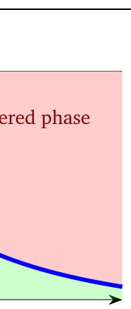
<figcaption class="paper-figure-caption"><b>Fig 1.</b> Figure 2: Phase diagram of the two-dimensional Ising model. The critical line (4) shown in blue separates an ordered phase from a disordered phase. Recall temper- ature is implicit in this diagram, since K = βJ and K′ = βJ′. All Ising models with parameters on the blue critical line renormalize to the same Ising conformal field theory, so it is not a line of critical points in the field-theoretical sense.</figcaption>
</figure>
<figure class="paper-figure-card">
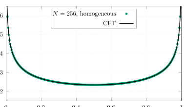
<figcaption class="paper-figure-caption"><b>Fig 2.</b> Figure 5: Equal imaginary time spin-spin correlations for N = 256 spins, with notation σ(x) = σ(x, y = 0). Left: homogeneous case with known chord length scaling (11). Right: inhomogeneous case, with deformation f (u) = 1 + a sin2πpu + b sin6πpu, a = 0.7, b = 0.5. Data for p = 1 and p = 2 is shown, and it compares extremely well with the curved spacetime CFT result (23). .</figcaption>
</figure>
<figure class="paper-figure-card">
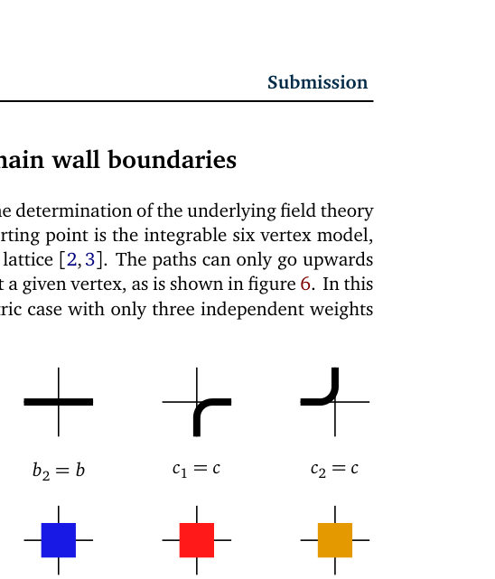
<figcaption class="paper-figure-caption"><b>Fig 3.</b> Figure 6: Top figure: representation of the six allowed vertices a1, a2, b1, b2, c1, c2 of the model. The paths can be seen as particle trajectories which can only go to the right, or upwards. They can meet at a given vertex but cannot cross. We also consider a case where vertex weights are particle-hole symmetric, as shown. Bottom figure: color code used in several of the following figures to represent vertex configurations.</figcaption>
</figure>
<figure class="paper-figure-card">
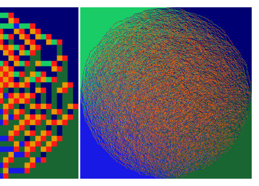
<figcaption class="paper-figure-caption"><b>Fig 4.</b> Figure 7: Typical configurations of the six vertex model with domain wall boundary conditions. Left: path configurations for N = 32, which enter through the left and exit through the top of the square. Middle: vertex representation for the same con- figuration, with the color code described in figure 6. Right: vertex representation for N = 512, with &quot;arctic circle&quot; boundary between the fluctuating and frozen regions.</figcaption>
</figure>
<figure class="paper-figure-card">
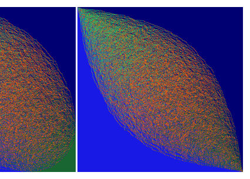
<figcaption class="paper-figure-caption"><b>Fig 5.</b> Figure 8: Typical configurations obtained using Monte Carlo. Three cases with de- formation λ(x) = π/4 + πα</figcaption>
</figure>
</div>

<p><strong>Summary.</strong> This paper analyzes two-dimensional classical lattice models at criticality when subjected to slow spatial variations. It demonstrates that these inhomogeneous systems are governed by Conformal Field Theory defined on a curved space, successfully deriving the underlying metric for both the Ising and six vertex models. This work provides a rigorous theoretical framework connecting lattice statistics, CFT, and geometry.</p>
<p><strong>Why it may be interesting.</strong> The connection between lattice statistical mechanics models (like the Ising model) and continuum field theories in curved spacetime provides a powerful tool for understanding how geometry influences critical phenomena, which is relevant to effective Hamiltonians in AMO physics.</p>
<details>
<summary>Detailed structure</summary>
<p><strong>Main problem.</strong> The study investigates how critical behavior of two-dimensional classical lattice models is modified by slow, spatially varying (inhomogeneous) deformations.</p>
<p><strong>Main result.</strong> Such inhomogeneous systems are shown to be described by a Conformal Field Theory formulated on a curved space, allowing the identification of the underlying space metric.</p>
<p><strong>Method.</strong> The analysis combines techniques from Conformal Field Theory (CFT), free fermion mapping via Jordan-Wigner transformation, and hydrodynamic approaches for specific cases.</p>
<p><strong>Model / system.</strong> The primary models are 2D classical lattice systems, specifically the Ising model and the six vertex model with domain wall boundary conditions. The Hamiltonian is defined by local coupling constants that vary slowly across the lattice.</p>
<p><strong>Key observables.</strong> Spin correlation functions, the energy gap ($\Delta E$), and the 'arctic curve' separating critical fluctuating regions from ordered phases.</p>
<p><strong>Important parameters / regimes.</strong> Coupling constants ($K, K'$), the deformation function $f(x/N)$, and the system size $N$ (in the large $N$ limit).</p>
<p><strong>Assumptions / limitations.</strong> The deformations are assumed to vary slowly at lattice scales while crucially preserving the underlying critical behavior.</p>
<p><strong>Figures summary.</strong> Figures illustrate the phase diagram of the Ising model, show the structure of the inhomogeneous lattice couplings, and provide numerical comparisons between calculated gaps/correlations and CFT predictions.</p>
<p><strong>Paper structure.</strong> The paper progresses from establishing the general framework using CFT for slow deformations to applying this formalism specifically to the 2D Ising model, deriving the curved space metric, and finally solving specific cases like the six vertex model using hydrodynamics.</p>
</details>
<details>
<summary>Abstract</summary>
<p>We study simple inhomogeneous deformations of known two-dimensional classical lattice models described by conformal field theory (CFT) at large distances. The deformations are chosen to vary slowly at lattice scales, while preserving critical behavior. Globally, we find that such systems are described by a CFT in curved space, and identify the underlying space metric. Our two examples are the Ising model and the six vertex model with domain wall boundary conditions. In the latter boundaries are also inhomogeneous, which complicates the analysis. We nevertheless solve the free case using hydrodynamics. In the presence of interactions we determine the arctic curve which separates a critical fluctuating region from an ordered (frozen) phase.</p>
</details>
<p><sub><a href="#top">↑ back to top</a></sub></p>

<p><a id="paper-2608.03702"></a></p>
<h3 id="inverse-design-of-quantum-control-sequences-with-fourier-neural-operators"><a href="http://arxiv.org/abs/2608.03702v1">Inverse Design of Quantum Control Sequences with Fourier Neural Operators</a></h3>
<p><strong>Authors:</strong> Anastasia Pipi, Valentin Duruisseaux, Emily Been, Xuecheng Tao, Taylor L. Patti, Anima Anandkumar, Prineha Narang<br>
<strong>Type:</strong> theory · <strong>Category:</strong> other · <strong>PDF:</strong> <a href="https://arxiv.org/pdf/2608.03702v1">https://arxiv.org/pdf/2608.03702v1</a><br>
<strong>Analysis basis:</strong> full PDF text, analyzed in chunks
<strong>Topic relevance:</strong> <code>methods for driven-dissipative</code> <strong>3/5</strong> · <code>analog quantum simulation</code> <strong>2/5</strong> · <code>non-equilibrium dynamics</code> <strong>2/5</strong> · <code>QC/QI experiment</code> <strong>1/5</strong> · <code>driven-dissipative phase transition</code> <strong>1/5</strong> · <code>quantum measurements</code> <strong>1/5</strong></p>
<div class="figure-strip-hint">↔ Scroll figures horizontally</div>
<div class="paper-figures-scroll">
<figure class="paper-figure-card">
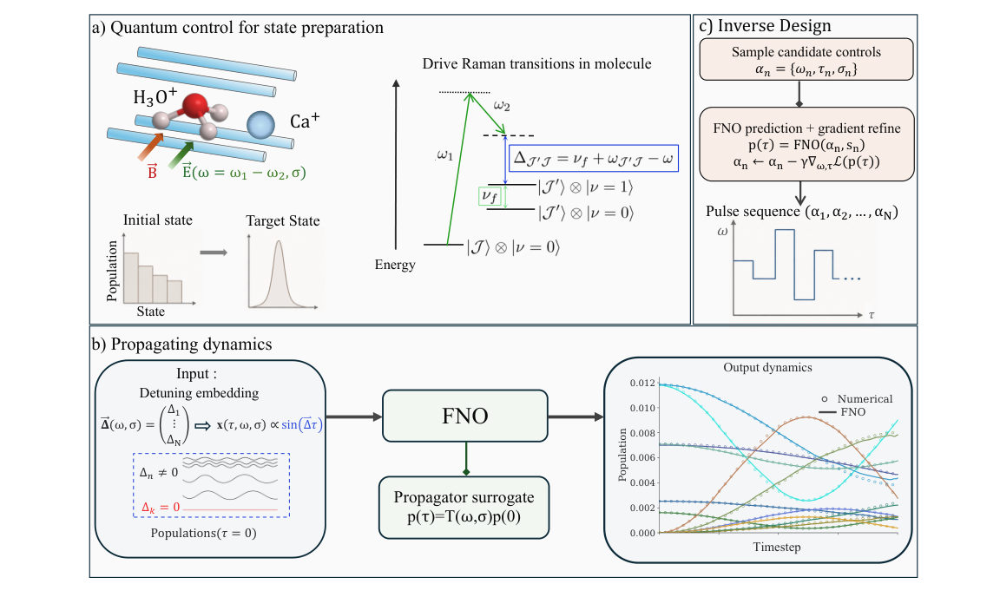
<figcaption class="paper-figure-caption"><b>Fig 1.</b> FIG. 1: FNO-based inverse-design pipeline for quantum state preparation. (a)Quantum control for molecular state preparation. Hydronium, H3O+, is co-trapped with a Ca+ logic ion in a quantum logic spectroscopy (QLS) setup. Molecular states J and J ′ are addressed by two-photon Raman sideband pulses driven by fields with angular frequencies ω1 and ω2, giving the effective two-photon angular frequency ω = ω1 −ω2. The first field is linearly polarized, while the second has polarization σ ∈{σ+, σ−}, denoted schematically by ⃗E(ω, σ). Appendix A 1 details how these electric-field polarizations determine the molecular selection rules. The Raman sideband drive couples the molecular transition to...</figcaption>
</figure>
<figure class="paper-figure-card">
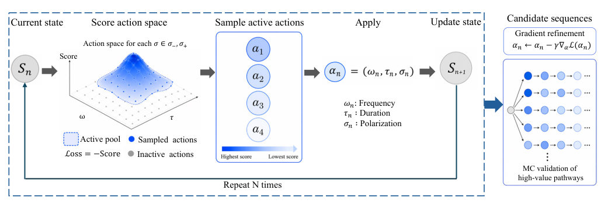
<figcaption class="paper-figure-caption"><b>Fig 2.</b> FIG. 2: Schematic of the stochastic planner (FNO-SPMP) used for inverse design of laser-pulse sequences. Starting from the current state sn, the model scores the available actions over the effective laser frequency ω and time τ, with the selection objective taken as the negative score, L = −Score = −S(αn, sn). An active pool is then formed from the actions whose score exceeds a defined threshold, and for each candidate sequence the planner stochastically samples one action from this pool at each pulse step. A sampled action αn = (ωn, τn, σn) (i.e. a pulse specified by its frequency ω, duration τ, and polarization σ) is applied to advance the system to the next state sn+1. Repeating this for...</figcaption>
</figure>
<figure class="paper-figure-card">
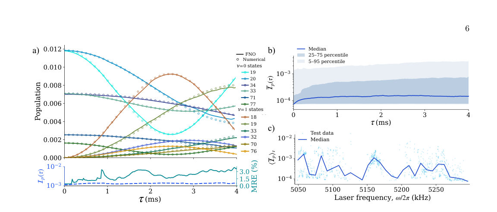
<figcaption class="paper-figure-caption"><b>Fig 3.</b> FIG. 3: Forward-propagation accuracy of the FNO surrogate. (a) Basis-state population dynamics predicted by the FNO and compared with CUDA-Q reference trajectories obtained from the reconstructed unitary propagator. The trajectory corresponds to a single pulse with drive frequency ω/2π = 5159.6 kHz. For clarity, we plot only states with a population change greater than 10−4; approximately stationary states are omitted from the upper panels but included in the full-state population infidelity Ip(τ). The lower strip reports Ip(τ) = 1 −Fp(τ) over all states and the percentage mean relative error (MRE) over the plotted active states. States are indexed from lowest to highest energy. (b)...</figcaption>
</figure>
<figure class="paper-figure-card">
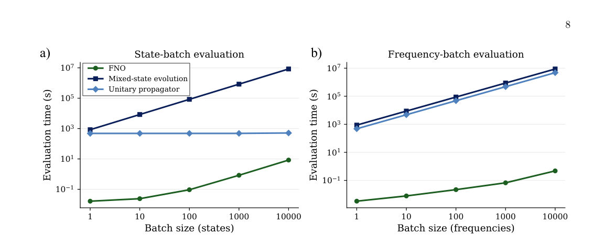
<figcaption class="paper-figure-caption"><b>Fig 4.</b> FIG. 4: Wall-clock evaluation time for forward propagation using numerical baselines and the FNO-based surrogate. (a) State-batch evaluation, where multiple initial mixed states are propagated at a fixed drive frequency. (b) Frequency-batch evaluation, where one initial mixed state is propagated over multiple drive frequencies. We compare three methods: 1) the FNO surrogate, which predicts the population dynamics in one batched forward pass, 2) direct mixed-state CUDA-Q evolution, which numerically propagates the density matrix, and 3) a CUDA-Q unitary-propagator baseline, where the propagator is reconstructed from batched basis-state evolution and then applied to the mixed initial state.</figcaption>
</figure>
<figure class="paper-figure-card">
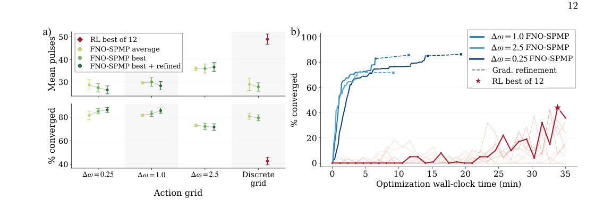
<figcaption class="paper-figure-caption"><b>Fig 5.</b> FIG. 5: Comparison of FNO-SPMP and RL state-preparation protocols. (a) Numerical validation of FNO-SPMP pulse sequences across action grids. The upper panel shows the percentage of Monte Carlo (MC) rollouts that reach the target purity threshold, and the lower panel shows the mean number of pulses over all rollouts. Markers indicate the average performance over generated sequences, the best selected sequence, and the result after gradient-based refinement. For the FNO-SPMP grids, ∆ω is the frequency-grid spacing used during inverse design. The discrete grid is the action space used for the RL comparison, with both frequency and pulse duration restricted to discrete values. (b) Convergence...</figcaption>
</figure>
</div>

<p><strong>Summary.</strong> The paper introduces an FNO-based framework to overcome the exponential computational cost of quantum optimal control. By using a fast surrogate model trained on molecular dynamics, they develop a planner that efficiently designs pulse sequences to purify complex molecular states in trapped ions. This significantly accelerates state preparation protocols compared to traditional optimization or reinforcement learning methods.</p>
<p><strong>Why it may be interesting.</strong> This work directly addresses the computational scaling limits in quantum control theory by replacing expensive numerical solvers with data-driven neural operators, making previously intractable large-scale molecular simulations feasible for optimization.</p>
<details>
<summary>Detailed structure</summary>
<p><strong>Main problem.</strong> The core problem is performing inverse design for quantum optimal control sequences, which is computationally prohibitive due to the exponential growth of complexity with Hilbert space dimension.</p>
<p><strong>Main result.</strong> The proposed FNO-SPMP framework achieves state purification in a large molecular subspace ($888$-dimensional $   ext{H}_3    ext{O}^+$) significantly faster and more reliably than reinforcement learning baselines, reducing generation time from hours to minutes.</p>
<p><strong>Method.</strong> The authors use a Fourier Neural Operator (FNO) as a fast, differentiable surrogate model to predict molecular-motional population dynamics. This is integrated into an iterative stochastic planner (FNO-SPMP) for inverse design.</p>
<p><strong>Model / system.</strong> The system studied is the hydronium ($  ext{H}_3    ext{O}^+$) molecule coupled with a logic ion ($ ext{Ca}^+$) in a trapped-ion setup. The dynamics are modeled by tracking basis-state populations within an 888-dimensional subspace.</p>
<p><strong>Key observables.</strong> Target-state population (aiming for $\geq 0.98$), sequence success rate, and the time required to generate the control pulse sequence.</p>
<p><strong>Important parameters / regimes.</strong> The system is studied at $20 	ext{ K}$, involving control parameters like laser frequency ($\omega$), pulse duration ($    au$), and polarization ($\sigma$).</p>
<p><strong>Assumptions / limitations.</strong> Key assumptions include restricting the motional mode to $
u \in {0, 1}$ and relying on measurement/cooling steps that reset coherences to allow a population-based description.</p>
<p><strong>Figures summary.</strong> Figures illustrate the full FNO-based inverse design pipeline for quantum control in $ ext{H}_3    ext{O}^+$, detailing the Hamiltonian setup, single-pulse prediction via FNO, and the iterative planning loop.</p>
<p><strong>Paper structure.</strong> The paper first establishes the computational bottleneck of quantum optimal control. It then introduces the FNO surrogate model to accelerate dynamics simulation. Finally, it details the FNO-SPMP protocol for inverse design, benchmarking its performance against RL methods on the $  ext{H}_3    ext{O}^+$ system.</p>
</details>
<details>
<summary>Abstract</summary>
<p>Quantum optimal control is a key tool for steering quantum dynamics, but its computational cost grows rapidly with the Hilbert space dimension. Here, we introduce a Fourier Neural Operator (FNO)-based framework for learning high dimensional molecular quantum dynamics and accelerating the inverse design of control protocols. Given an initial molecular population distribution, laser frequency, and polarization, the FNO predicts molecular-motional population dynamics up to $10^7$ times faster than GPU-accelerated numerical propagation with CUDA-Q Dynamics. Using this fast and differentiable surrogate, we develop the FNO stochastic pulse-measurement planner (FNO-SPMP), which constructs pulse sequences to purify an initially mixed Boltzmann distribution. We demonstrate the protocol in an 888-dimensional subspace of the hydronium molecule at 20 K, achieving a target-state population of 0.98 with a sequence success rate of up to 86.2%. In a shared discrete control space, FNO-SPMP achieves nearly twice the success rate of a reinforcement-learning baseline while using roughly half as many quantum control pulses and reducing pulse-sequence generation time from approximately 10 hours to 10-20 minutes. These results show that operator-learning surrogates can enable inverse design in quantum systems whose Hilbert spaces are too large for conventional direct optimization.</p>
</details>
<p><sub><a href="#top">↑ back to top</a></sub></p>

<p><a id="paper-2608.02753"></a></p>
<h3 id="large-scale-neural-quantum-states-reveal-the-interplay-between-superconductivity-and-quantum-criticality-in-the-hofstadter-hubbard-model"><a href="http://arxiv.org/abs/2608.02753v1">Large scale neural quantum states reveal the interplay between superconductivity and quantum criticality in the Hofstadter-Hubbard model</a></h3>
<p><strong>Authors:</strong> Christopher Roth, Andrew Millis, Tomohiro Soejima<br>
<strong>Type:</strong> theory · <strong>Category:</strong> strongly correlated electrons · <strong>PDF:</strong> <a href="https://arxiv.org/pdf/2608.02753v1">https://arxiv.org/pdf/2608.02753v1</a><br>
<strong>Analysis basis:</strong> full PDF text, analyzed in chunks
<strong>Topic relevance:</strong> <code>analog quantum simulation</code> <strong>3/5</strong> · <code>methods for driven-dissipative</code> <strong>3/5</strong> · <code>Keldysh / 2PI / non-Gaussian methods</code> <strong>1/5</strong> · <code>driven-dissipative phase transition</code> <strong>1/5</strong> · <code>entanglement &amp; information structure</code> <strong>1/5</strong> · <code>exotic spin models in light-matter</code> <strong>1/5</strong></p>
<div class="figure-strip-hint">↔ Scroll figures horizontally</div>
<div class="paper-figures-scroll">
<figure class="paper-figure-card">
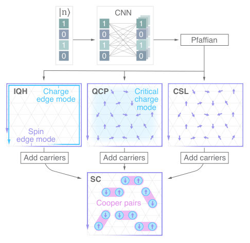
<figcaption class="paper-figure-caption"><b>Fig 1.</b> FIG. 1. Overview of our numerical simulations. We use a Pfaffian-based neural quantum wavefunction to simulate the triangular-lattice Hofstadter-Hubbard model at π/2 flux per plaquette. We find a second-order phase transition between an IQH and a CSL phase at half filling, separated by a quan- tum critical point. Upon doping, all of these phases become the same superconductor, but the superfluid stiffness is en- hanced near the critical point.</figcaption>
</figure>
<figure class="paper-figure-card">
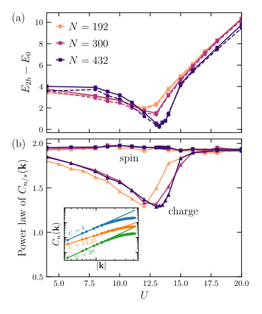
<figcaption class="paper-figure-caption"><b>Fig 2.</b> FIG. 2. Second-order phase transition between the IQH and CSL phases. Here we show the results of simulations on N = 192, N = 300, and N = 432 site clusters. (a) Energy gap to a 2 hole excitation as a function of U. The charge gap approaches zero around U ∼13.25. (b) Small-|k| power law of the charge (triangle) and spin (square) structure factors as a function of U. Charge fluctuations become enhanced near the critical point. (Inset) Power-law fit of Cˆn(k) at U = 4, 13.25, and 20.</figcaption>
</figure>
<figure class="paper-figure-card">
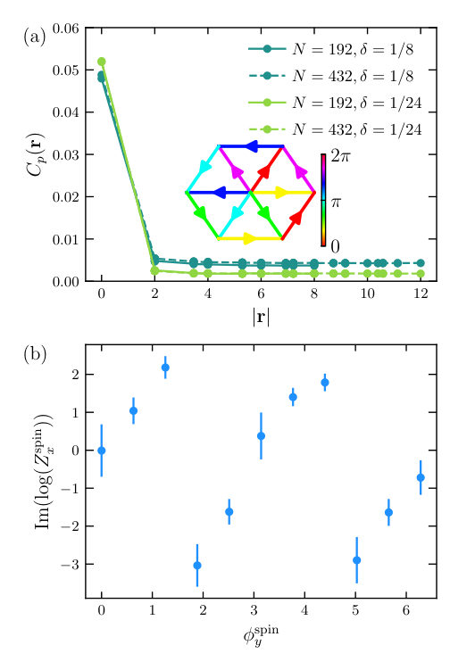
<figcaption class="paper-figure-caption"><b>Fig 3.</b> FIG. 3. Characterizing topological superconductivity. (a) Pair correlations on the Hofstadter-Hubbard model at U = 8 for 192 and 432 site clusters at 1/8 and 1/24 doping. (In- set) The phases of the pairing order parameter as written in Eq. (2). (b) Many-body spin polarization as a function of spin flux threading at U = 10, δ = 1/36 on the 192 site torus. The polarization winds twice as ϕspin y goes from 0 to 2π, cor- responding to σs xy = 2 ℏ</figcaption>
</figure>
<figure class="paper-figure-card">
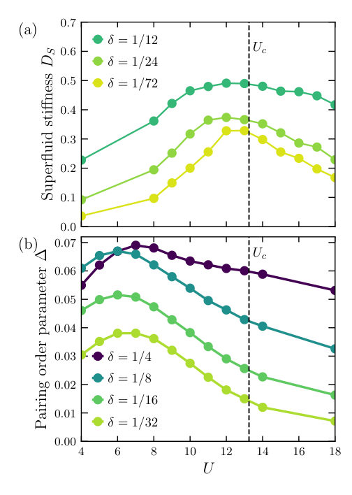
<figcaption class="paper-figure-caption"><b>Fig 4.</b> FIG. 4. Doping the Hofstadter-Hubbard model around the critical point. (a) Superfluid stiffness Ds as a function of U for several different doping levels at N = 432, computed from d2E/dϕ2 y. At low doping, the stiffness peaks around the critical point. (b) Pairing order parameter extracted from the square root of the average pair correlations beyond distance 4 on the 192 site cluster as a function of U for several different doping levels. It peaks at small U and is featureless around the critical point.</figcaption>
</figure>
<figure class="paper-figure-card">
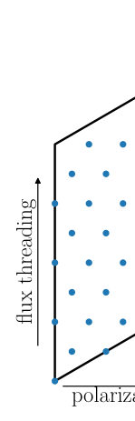
<figcaption class="paper-figure-caption"><b>Fig 5.</b> FIG. 5. Diagram of the tori simulated in this work. Here we show a √</figcaption>
</figure>
</div>

<p><strong>Summary.</strong> This work investigates superconductivity in the Hofstadter-Hubbard model, focusing on how doping across a quantum critical point influences pairing. Using Neural Quantum States, the authors find that while the pairing magnitude is stable, the superfluid stiffness strongly peaks near the transition, suggesting that proximity to criticality enhances superconducting mobility more than it affects pair formation itself.</p>
<p><strong>Why it may be interesting.</strong> The methodology—using NQS to probe quantum criticality in strongly correlated models—provides a powerful computational framework applicable to understanding exotic superconducting mechanisms driven by competing orders.</p>
<details>
<summary>Detailed structure</summary>
<p><strong>Main problem.</strong> The study addresses how a parent insulating state dictates the superconductivity that emerges when the system is doped away from an insulator.</p>
<p><strong>Main result.</strong> Superconductivity in the Hofstadter-Hubbard model is governed not by the nature of the parent state, but by proximity to the quantum critical point separating two distinct phases.</p>
<p><strong>Method.</strong> The authors employed Neural Quantum States (NQS) trained on variational wavefunctions to simulate the system's ground state properties across various doping levels and interaction strengths.</p>
<p><strong>Model / system.</strong> The physical model is the triangular-lattice Hofstadter-Hubbard model with a $\pi/2$ flux per plaquette. At half filling, it exhibits two parent states: an integer quantum Hall insulator (IQH) and a chiral spin liquid (CSL), separated by a topological phase transition.</p>
<p><strong>Key observables.</strong> Superfluid stiffness ($\mathcal{D}_s$), pairing order parameter ($\Delta$), $2e$ charge gap ($\Delta_{2e}$), and structure factors ($C^{\wedge}_n(k)$, $C^{\wedge}_{Sz}(k)$).</p>
<p><strong>Important parameters / regimes.</strong> Interaction strength ($U$), doping level ($\delta$), and the proximity to the quantum critical point (QCP) separating IQH and CSL phases.</p>
<p><strong>Assumptions / limitations.</strong> The analysis relies on NQS being a powerful tool for capturing long-range electronic correlations, and that observables like superfluid stiffness can be accurately extracted via flux threading or finite differences.</p>
<p><strong>Figures summary.</strong> Figures illustrate the continuous nature of the IQH–CSL transition (vanishing gap), the enhancement of superfluid stiffness near the QCP, and the distinct behavior of pairing order parameter versus stiffness across this critical region.</p>
<p><strong>Paper structure.</strong> The paper systematically analyzes the model by first characterizing the parent insulating phases via topological invariants (winding numbers) and then investigating superconductivity upon doping. Key diagnostics include measuring gap closing, analyzing structure factors for critical fluctuations, and comparing the response of pairing order vs. superfluid stiffness near the QCP.</p>
</details>
<details>
<summary>Abstract</summary>
<p>Understanding how a parent insulating state shapes the superconductivity that emerges upon doping is a long-standing problem dating back to Anderson's resonating-valence-bond proposal. The triangular-lattice Hofstadter-Hubbard model with $π/2$ flux per plaquette offers an ideal setting for this question: at half filling it hosts two distinct parent states---an integer quantum Hall insulator at weak coupling and a chiral spin liquid at intermediate coupling---separated by a topological phase transition. Using neural quantum states on tori of up to $432$ sites, we present strong evidence that the transition is continuous, with a vanishing $2e$ charge gap and critical charge fluctuations. Upon doping, we find a topological superconductor with off-diagonal long-range order consistent with $d+id$ pairing on either side of the transition. The two ingredients of superconductivity, pair formation and phase coherence, respond to the parent state in sharply different ways: while the pairing order parameter remains nearly unchanged across the transition, the superfluid stiffness is strongly enhanced near the critical point. The energy scale of the superconductor is therefore set not by which parent state is doped, but by proximity to the transition between them. Our results establish neural quantum states as a powerful tool for understanding the delicate interplay between long-ranged electronic correlations and superconductivity.</p>
</details>
<p><sub><a href="#top">↑ back to top</a></sub></p>

<p><a id="paper-2608.03440"></a></p>
<h3 id="suppressing-cavity-frequency-noise-using-a-kerr-nonlinearity"><a href="http://arxiv.org/abs/2608.03440v1">Suppressing Cavity Frequency Noise Using a Kerr Nonlinearity</a></h3>
<p><strong>Authors:</strong> J. P. van Soest, S. Meilof, G. L. Bhai, M. Villiers, C. A. Potts, G. A. Steele<br>
<strong>Type:</strong> experiment · <strong>Category:</strong> other · <strong>PDF:</strong> <a href="https://arxiv.org/pdf/2608.03440v1">https://arxiv.org/pdf/2608.03440v1</a><br>
<strong>Analysis basis:</strong> full PDF text, analyzed in chunks
<strong>Topic relevance:</strong> <code>quantum optics experiment</code> <strong>3/5</strong> · <code>Tavis-Cummings &amp; cavity-many-emitter</code> <strong>2/5</strong> · <code>quantum measurements</code> <strong>2/5</strong> · <code>QC/QI experiment</code> <strong>1/5</strong> · <code>correlated cavity matter</code> <strong>1/5</strong> · <code>driven-dissipative phase transition</code> <strong>1/5</strong></p>
<div class="figure-strip-hint">↔ Scroll figures horizontally</div>
<div class="paper-figures-scroll">
<figure class="paper-figure-card">
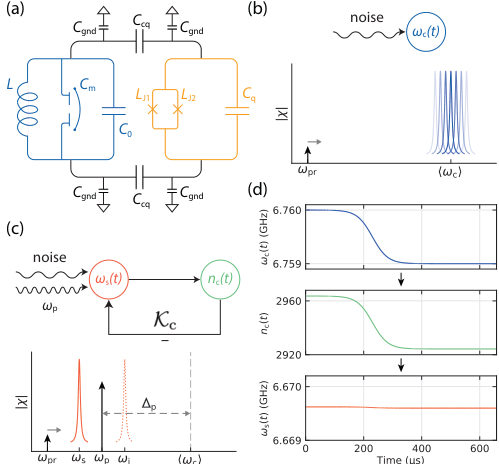
<figcaption class="paper-figure-caption"><b>Fig 1.</b> FIG. 1. Illustration of the Kerr-feedback mechanism in a microwave resonator. (a) Schematic representation of the circuit. The cavity is shown in blue, the qubit in orange. (b) Diagram of a cavity resonance subject to environmental noise that fluctuates the resonance frequency ωc(t) (blue). A small probe tone ωpr (black arrow) is swept over the fluctu- ating cavity resonance. (c) A pump tone with frequency ωp (large black arrow) is applied red-detuned from the bare cav- ity frequency ⟨ωc⟩. The linearized response of the Kerr cavity is described by the dressed cavity resonance ωs(t) (solid red), and an additional idler resonance ωi(t) (dotted red), located symmetrically about the pump...</figcaption>
</figure>
<figure class="paper-figure-card">
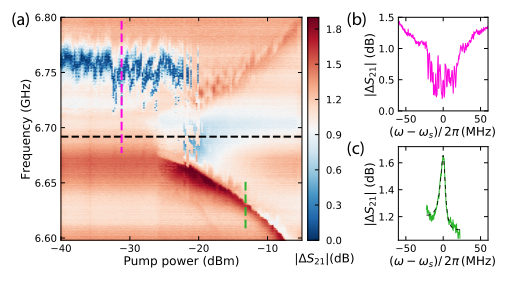
<figcaption class="paper-figure-caption"><b>Fig 2.</b> FIG. 2. Observation of the Kerr-locked cavity. (a) Nor- malized colormap of the magnitude |∆S21| response, mea- sured using two-tone spectroscopy. A pump tone, red-detuned from the bare cavity by ∆p/2π = −68 MHz (black dashed line), is progressively increased in power while a weak, non- invasive probe tone is swept across the cavity resonance. At low pump powers, fluctuations of the cavity resonance are ob- served about ⟨ωc⟩/2π = 6.76 GHz. Above a pump power of −20.0 dBm the nonlinear response bifurcates, resulting in the dressed cavity resonance to appear below the pump frequency. This mode is consequently frequency-stabilized, together with the idler mode on the opposite side of the pump....</figcaption>
</figure>
<figure class="paper-figure-card">
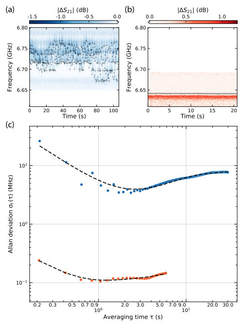
<figcaption class="paper-figure-caption"><b>Fig 3.</b> FIG. 3. Time dynamics of the cavity resonance be- fore and after Kerr-feedback. (a) Normalized colormap of the measured |∆S21| response of fast spectroscopy traces. The unlocked bare cavity displays resonance-frequency fluctu- ations and linewidth broadening. The fit resonance frequency of each trace is shown with black circles, exhibiting a stan- dard deviation of σstd,c = 23.2 MHz. Measurement and fits of the dressed cavity resonance are shown in panel (b), where the standard deviation is reduced to σstd,s = 297 kHz. (c) Absolute frequency Allan deviation σf(τ) before (blue) and after (red) applying the intrinsic feedback mechanism to the cavity. Black dashed lines show fits based on the...</figcaption>
</figure>
<figure class="paper-figure-card">
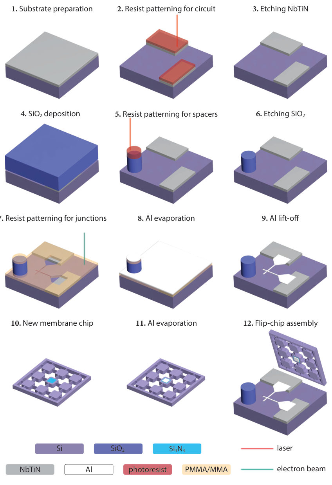
<figcaption class="paper-figure-caption"><b>Fig 4.</b> FIG. 4. Schematic device fabrication. Panels 1-3 show the fabrication of the NbTiN microwave circuit. Panels 4-6 show the deposition and etching of the SiO2 spacers. Panels 7-9 show the evaporation and lift-off process for the Al junctions. Panels 10-12 show the metallization and placement of the membrane chip. Dimensions of the structures are not to scale. Detailed information on each step is provided in the text.</figcaption>
</figure>
<figure class="paper-figure-card">
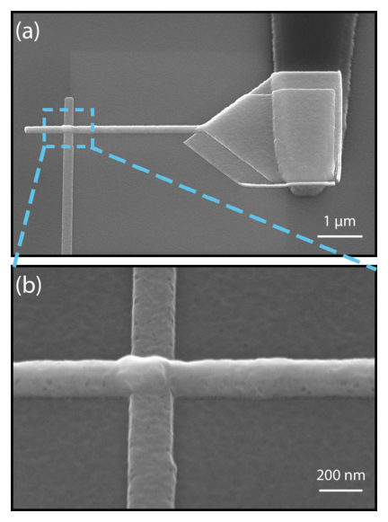
<figcaption class="paper-figure-caption"><b>Fig 5.</b> FIG. 5. Scanning electron micrographs of an alu- minum junction. Two different magnifications of a Joseph- son junction fabricated with the described recipe. The images are taken with a tilt of 40◦. Panel (a) shows the intact step edges of the Al (white) from the Si substrate (gray) to the NbTiN circuit (black). (b) A zoom-in of the Manhattan-style Al-AlOx-Al Josephson junction.</figcaption>
</figure>
</div>

<p><strong>Summary.</strong> The authors demonstrate that by exploiting the Kerr nonlinearity inherent in superconducting microwave cavities, they can passively stabilize resonance frequency fluctuations. This 'Kerr locking' technique suppresses noise by two orders of magnitude without requiring active feedback loops. The method offers a general approach for stabilizing various nonlinear resonators used across quantum sensing and computing platforms.</p>
<p><strong>Why it may be interesting.</strong> This work demonstrates a purely nonlinear, passive method for stabilizing high-quality microwave resonators, which is crucial for building sensitive quantum sensors and improving readout fidelity in superconducting quantum circuits.</p>
<details>
<summary>Detailed structure</summary>
<p><strong>Main problem.</strong> Resonance-frequency fluctuations limit the sensitivity of superconducting microwave cavities used for various quantum measurements.</p>
<p><strong>Main result.</strong> The intrinsic Kerr nonlinearity provides a passive feedback mechanism that suppresses cavity frequency noise by nearly two orders of magnitude, reaching the $1/f$ noise floor without active control.</p>
<p><strong>Method.</strong> Two-tone spectroscopy and Allan deviation analysis were used to experimentally characterize the nonlinear feedback and measure temporal stability.</p>
<p><strong>Model / system.</strong> The system is a superconducting microwave cavity incorporating a flux-tunable transmon qubit, which induces a Kerr nonlinearity ($K_c$). The stabilization mechanism involves locking the noisy cavity mode to a strong pump tone.</p>
<p><strong>Key observables.</strong> Frequency fluctuations ($\sigma_{std}$), Allan deviation ($\sigma_f(	au)$), and the transfer function $T(\omega_m)$.</p>
<p><strong>Important parameters / regimes.</strong> Pump detuning ($\Delta_p$), Kerr nonlinearity coefficient ($K_c$), cavity linewidth ($\kappa$).</p>
<p><strong>Assumptions / limitations.</strong> The stabilization relies on operating in a regime where the intrinsic nonlinear feedback dominates over external noise sources.</p>
<p><strong>Figures summary.</strong> Figures illustrate the spectroscopy response before and after locking, showing frequency stabilization; time dynamics plots compare standard deviations (MHz to kHz); and Allan deviation plots quantify the noise floor reduction.</p>
<p><strong>Paper structure.</strong> The paper first establishes the problem of cavity noise limitation. It then details the Kerr-locking mechanism using theoretical modeling (Bogoliubov modes) and experimental characterization via two-tone spectroscopy, culminating in quantitative analysis of noise suppression using Allan deviation.</p>
</details>
<details>
<summary>Abstract</summary>
<p>Resonance-frequency fluctuations can limit the sensitivity and stability of superconducting microwave cavities used for qubit readout, optomechanical displacement sensing, and magnetic flux detection. Here, we demonstrate the suppression of resonance-frequency fluctuations by locking a noisy nonlinear superconducting microwave cavity to a strong pump tone. The Kerr nonlinearity of this system, whereby the resonance frequency depends on the intracavity field amplitude, gives rise to an intrinsic feedback mechanism that enables passive stabilization without active external feedback. Using two-tone spectroscopy, we experimentally characterize the intrinsic nonlinear feedback mechanism and investigate its temporal stability through Allan deviation analysis. The frequency fluctuations of the locked cavity mode are reduced by nearly two orders of magnitude, reaching the $1/f$ noise floor, without continuous frequency tracking or active control. Kerr locking provides a general approach for self-stabilizing nonlinear microwave resonators by suppressing low-frequency cavity noise while preserving sensitivity to signals outside the locking bandwidth. This approach may benefit a broad range of systems, including SQUID-based resonators, optomechanical devices, and parametric amplifiers.</p>
</details>
<p><sub><a href="#top">↑ back to top</a></sub></p>

<p><a id="paper-2608.03495"></a></p>
<h3 id="thermodynamically-consistent-initialization-of-the-maxwell-cattaneo-vernotte-heat-conduction-model-analytical-solutions-and-engineering-applications"><a href="http://arxiv.org/abs/2608.03495v1">Thermodynamically consistent initialization of the Maxwell--Cattaneo---Vernotte heat conduction model: Analytical solutions and engineering applications</a></h3>
<p><strong>Authors:</strong> Zalán Sándor, Róbert Kovács<br>
<strong>Type:</strong> theory · <strong>Category:</strong> statistical mechanics · <strong>PDF:</strong> <a href="https://arxiv.org/pdf/2608.03495v1">https://arxiv.org/pdf/2608.03495v1</a><br>
<strong>Analysis basis:</strong> full PDF text, analyzed in chunks
<strong>Topic relevance:</strong> <code>non-equilibrium dynamics</code> <strong>3/5</strong> · <code>non-equilibrium universality</code> <strong>2/5</strong> · <code>Keldysh / 2PI / non-Gaussian methods</code> <strong>1/5</strong> · <code>analog quantum simulation</code> <strong>1/5</strong> · <code>correlated / nonlocal dissipation</code> <strong>1/5</strong> · <code>driven-dissipative phase transition</code> <strong>1/5</strong> · <code>methods for driven-dissipative</code> <strong>1/5</strong></p>
<div class="figure-strip-hint">↔ Scroll figures horizontally</div>
<div class="paper-figures-scroll">
<figure class="paper-figure-card">
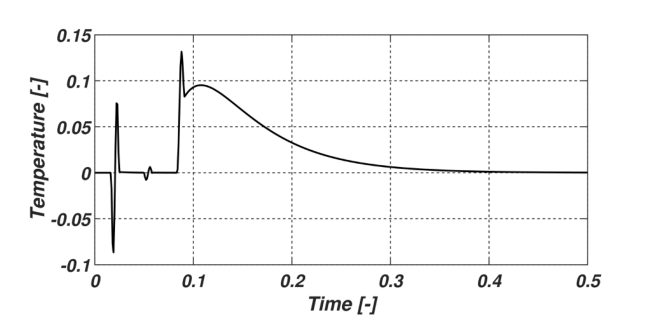
<figcaption class="paper-figure-caption"><b>Fig 1.</b> Figure 1: Demonstrating the appearance of artificial oscillations for hyperbolic heat equations in COMSOL [24]. It is difficult to distinguish between real physical wave propagation and nonphysical numerical error.</figcaption>
</figure>
<figure class="paper-figure-card">
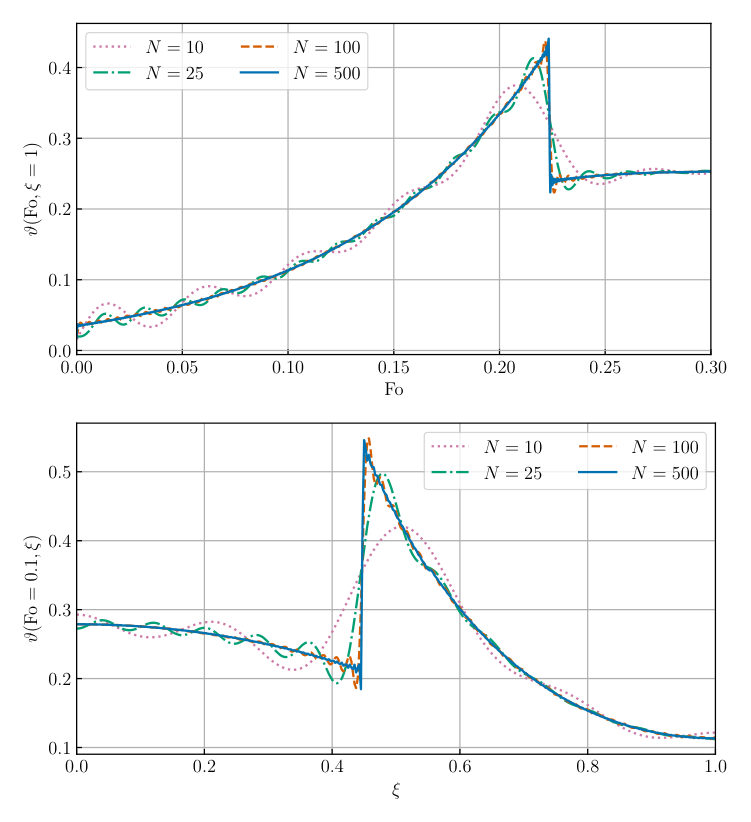
<figcaption class="paper-figure-caption"><b>Fig 2.</b> Figure 2: Convergence test of the Galerkin-type analytical solution in the case when the initial time derivative of q is zero and ˆτ = 0.05. Top figure: convergence of the temperature in time. Bottom figure: convergence of the temperature in space. Such a study makes clear that the proper representation of sharp fronts requires the use of 500 terms of the Galerkin series.</figcaption>
</figure>
<figure class="paper-figure-card">
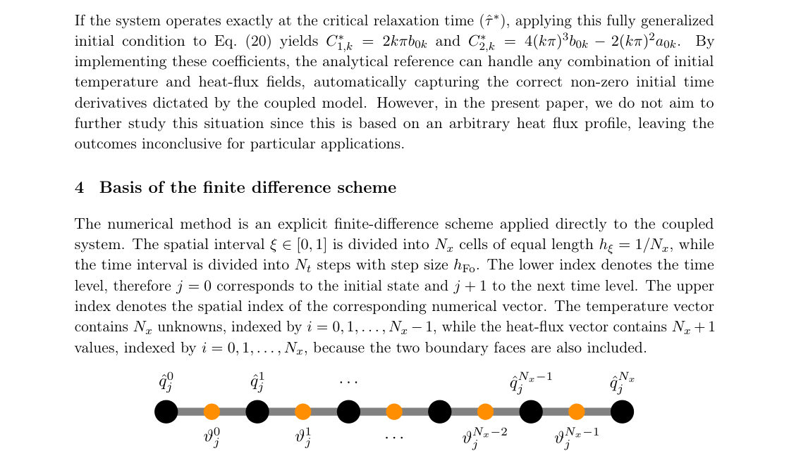
<figcaption class="paper-figure-caption"><b>Fig 3.</b> Figure 3: Schematic representation of the spatial discretization used in the explicit finite-difference simulations. The temperature is evaluated at cell centers, while the heat flux is evaluated at cell faces.</figcaption>
</figure>
<figure class="paper-figure-card">
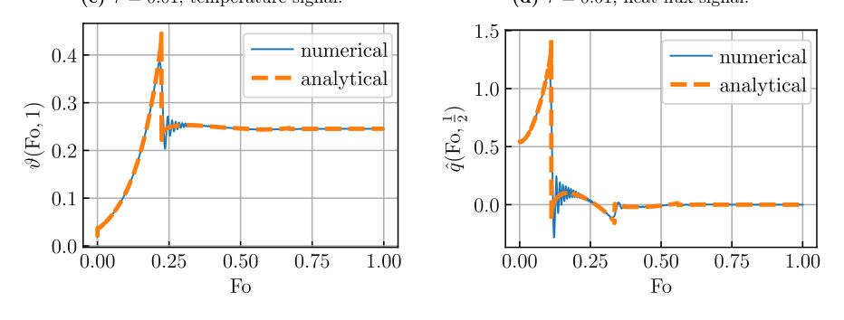
<figcaption class="paper-figure-caption"><b>Fig 4.</b> Figure 4: Comparison of analytical and numerical signals when the initial heat-flux derivative is set to zero.</figcaption>
</figure>
<figure class="paper-figure-card">
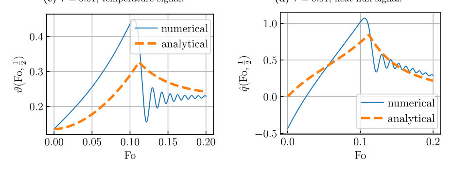
<figcaption class="paper-figure-caption"><b>Fig 5.</b> Figure 5: Comparison of analytical and numerical signals when a spatially uniform non-zero initial derivative of the heat flux is used.</figcaption>
</figure>
</div>

<p><strong>Summary.</strong> This paper addresses the critical numerical challenge of initializing non-Fourier heat conduction models like MCV. By comparing three initialization methods against an analytical solution, the authors prove that assuming zero or uniform initial derivatives introduces severe unphysical oscillations. They establish a thermodynamically consistent technique using the exact space-dependent derivative to ensure accurate simulation of transient thermal wave propagation.</p>
<p><strong>Why it may be interesting.</strong> While focused on classical heat transfer, the rigorous mathematical treatment of initial conditions and the distinction between physical dynamics and numerical artifacts is highly relevant to any field involving time evolution or non-equilibrium states, including quantum quench dynamics simulations.</p>
<details>
<summary>Detailed structure</summary>
<p><strong>Main problem.</strong> The core challenge is mathematically defining the initial time derivative for non-equilibrium states when numerically solving the Maxwell--Cattaneo--Vernotte (MCV) heat conduction model.</p>
<p><strong>Main result.</strong> Using an initialization strategy that maps the exact space-dependent derivative preserves local thermodynamic structure, yielding robust transient responses matching analytical benchmarks without introducing unphysical oscillations seen with zero or uniform assumptions.</p>
<p><strong>Method.</strong> The authors compare three initialization strategies—zero derivative, uniform non-zero derivative, and exact space-dependent derivative—by solving the coupled MCV equations using an explicit staggered finite-difference scheme against a Galerkin analytical solution.</p>
<p><strong>Model / system.</strong> The study focuses on one-dimensional transient heat conduction governed by the MCV model, which is a non-Fourier extension incorporating a memory-type constitutive relationship for heat flux. The system is analyzed under adiabatic boundary conditions with an exponentially distributed initial temperature field.</p>
<p><strong>Key observables.</strong> Transient responses of temperature (T) and heat flux (q); quantitative error percentages ($\varepsilon_{\vartheta}, \varepsilon_{\hat{q}}$).</p>
<p><strong>Important parameters / regimes.</strong> Relaxation time ($  au$), thermal conductivity ($\lambda$), density ($
ho$), specific heat capacity ($c$); the non-dimensional relaxation parameter $\hat{	au}$.</p>
<p><strong>Assumptions / limitations.</strong> The analysis assumes constant transport coefficients and focuses on 1D conduction; the rigorous initialization technique is shown to be computationally inexpensive relative to time-stepping.</p>
<p><strong>Figures summary.</strong> Figures compare numerical simulations (using different initial derivative assumptions) against an analytical reference solution for various relaxation times ($\hat{	au}$), demonstrating artifact generation from incorrect initialization.</p>
<p><strong>Paper structure.</strong> The paper systematically evaluates three initialization methods, compares the resulting transient solutions to a known analytical benchmark derived via Galerkin's method, and concludes by establishing a thermodynamically consistent procedure applicable to higher-order models like Guyer–Krumhansl.</p>
</details>
<details>
<summary>Abstract</summary>
<p>This paper investigates the numerical initialization of the one-dimensional Maxwell--Cattaneo--Vernotte (MCV) heat conduction model, addressing the critical mathematical challenge of defining the initial time derivative for non-equilibrium states. In modern high-frequency thermal engineering applications, traditional time-integration schemes and commercial finite-element solvers frequently introduce severe numerical artifacts when handling non-Fourier models. This study systematically evaluates three initialization strategies: a zero derivative, a spatially uniform non-zero derivative, and an exact space-dependent derivative. Using an explicit staggered finite-difference scheme, the transient responses to an exponentially distributed initial temperature field under adiabatic boundary conditions are compared against an analytical solution using the Galerkin method. The results demonstrate that assuming a zero or spatially uniform initial derivative introduces significant unphysical oscillatory deviations, leading to heat-flux prediction errors as the relaxation time increases. Conversely, mapping the exact space-dependent derivative onto the staggered grid preserves the local thermodynamic structure of the initial state, yielding robust transient responses that match the analytical benchmark without meaningful computational overhead. These findings establish a thermodynamically consistent initialization technique that can be extended to non-local models as well.</p>
</details>
<p><sub><a href="#top">↑ back to top</a></sub></p>

<p><a id="paper-2608.03513"></a></p>
<h3 id="vector-field-control-and-emergent-basal-plane-anisotropy-of-magnetic-textures-in-noncentrosymmetric-femath575mathnimath576mathpdmath577mathmath578mathp"><a href="http://arxiv.org/abs/2608.03513v1">Vector-field control and emergent basal-plane anisotropy of magnetic textures in noncentrosymmetric (Fe$_{0.63}$Ni$_{0.3}$Pd$_{0.07}$)$_3$P</a></h3>
<p><strong>Authors:</strong> Victor Ukleev, Oleg I. Utesov, Lorenzo Ubilla, Chen Luo, Radu-Marius Abrudan, Peter Wild, Holger Kropf, Moritz Winter, Sebastian Schneider, Alexander Tahn, Bernd Rellinghaus, Tim A. Butcher, Simone Finizio, Sebastian Wintz, Markus Weigand, Max T. Birch, Yoshinori Tokura, Yasujiro Taguchi, Kosuke Karube, Florin Radu<br>
<strong>Type:</strong> experiment · <strong>Category:</strong> other · <strong>PDF:</strong> <a href="https://arxiv.org/pdf/2608.03513v1">https://arxiv.org/pdf/2608.03513v1</a><br>
<strong>Analysis basis:</strong> full PDF text, analyzed in chunks
<strong>Topic relevance:</strong> <code>exotic spin models in light-matter</code> <strong>3/5</strong> · <code>spintronics-quantum-optics interface</code> <strong>3/5</strong> · <code>analog quantum simulation</code> <strong>1/5</strong> · <code>driven-dissipative phase transition</code> <strong>1/5</strong> · <code>methods for driven-dissipative</code> <strong>1/5</strong> · <code>non-equilibrium dynamics</code> <strong>1/5</strong></p>
<div class="figure-strip-hint">↔ Scroll figures horizontally</div>
<div class="paper-figures-scroll">
<figure class="paper-figure-card">
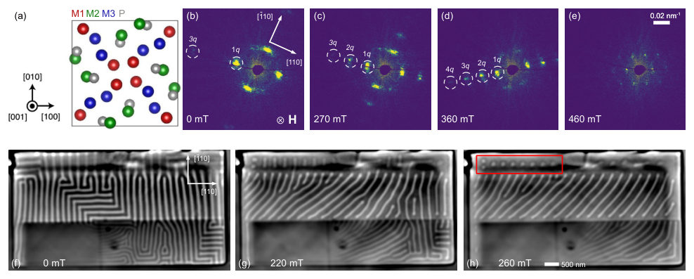
<figcaption class="paper-figure-caption"><b>Fig 1.</b> FIG. 1. (a) Schematic of noncentrosymmetric tetragonal crystal structure of (Fe0.63Ni0.3Pd0.07)3P viewed from [001] direction. Three inequivalent crystallographic sites, randomly occupied by metallic ions, are denoted M1, M2, and M3. (b-e) Resonant SAXS patterns measured in (b) zero field, (c) 270 mT, (d) 360 mT, and (e) 460 mT applied along the c-axis. (f-h) Real-space ptychographic phase images of magnetic textures measured at the out-of-plane magnetic field H||[001] of (f) 0 mT, (g) 220 mT, (h) 260 mT in stripe, soliton, and co-existing soliton and skyrmion states. Skyrmions nucleated at 260 mT are highlighted by the red box.</figcaption>
</figure>
<figure class="paper-figure-card">
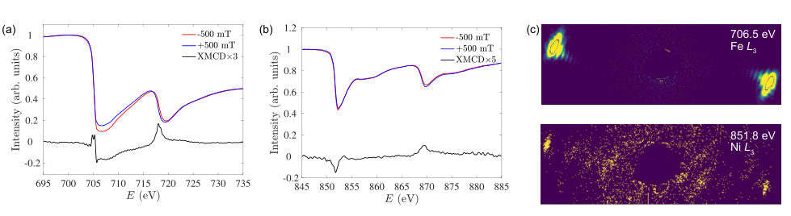
<figcaption class="paper-figure-caption"><b>Fig 2.</b> FIG. 2. (a,b) Soft x-ray transmission and XMCD spectra measured across Fe and Ni L2,3 edges, respectively. (c) Rescaled element-selective SAXS patterns measured at zero field at Fe and Ni edges.</figcaption>
</figure>
<figure class="paper-figure-card">
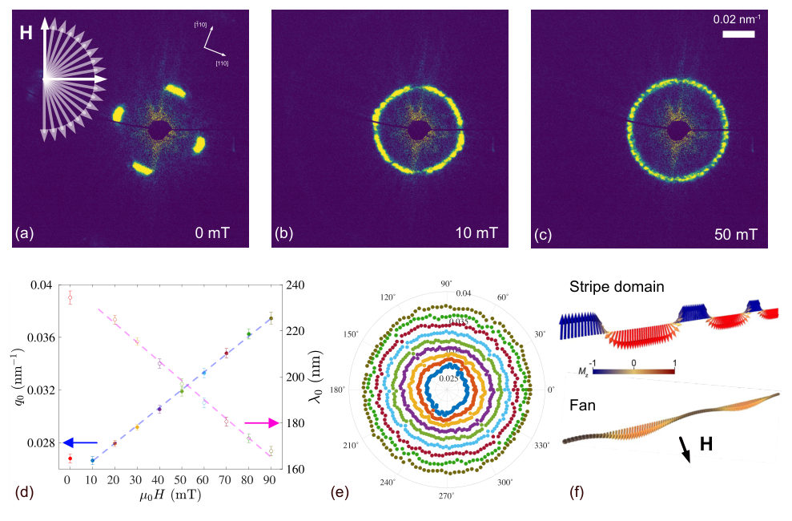
<figcaption class="paper-figure-caption"><b>Fig 3.</b> FIG. 3. Summed vector-field SAXS patterns measured at 300 K and at the magnitude of the azimuthal magnetic field of (a) 0 mT, (b) 10 mT, and (c) 50 mT. (d) In-plane field dependence of the magnetic wavevector and the corresponding real-space stripe periodicity averaged over all azimuthal field angles. (e) Polar plot of the wavevector magnitude as a function of the azimuthal field angle and the magnitude of the field. Symbol colors correspond to those indicating the field magnitudes in panel (d). (f) Schematics of zero-field stripe domain and in-plane field-induced fan structures.</figcaption>
</figure>
<figure class="paper-figure-card">
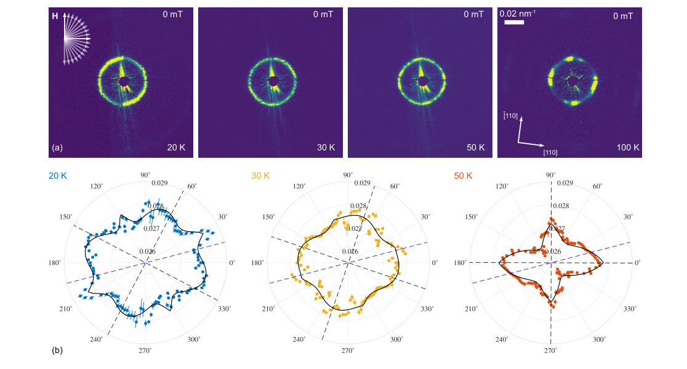
<figcaption class="paper-figure-caption"><b>Fig 4.</b> FIG. 4. (a) Summed zero-field SAXS patterns measured at 20 K, 30 K, 50 K, 100 K after applying a saturating field of 200 mT in every azimuthal direction with a 3◦step. At 100 K and above, the domain propagation direction always returns to its original axis. (b) Polar plot of the magnetic wavevector magnitude as a function of the azimuthal field angle at 20 K, 30 K, and 50 K at zero field. Solid curves represent the fit according to the theoretical model discussed in the main text. Dashed black lines indicate the fitted orientations of the effective DMI axes, while the dashed blue line marks the direction of the in-plane uniaxial strain.</figcaption>
</figure>
</div>

<p><strong>Summary.</strong> This work uses advanced X-ray scattering techniques on $(	ext{Fe}_{0.63}	ext{Ni}_{0.3}	ext{Pd}_{0.07})_3	ext{P}$ to demonstrate precise control over magnetic stripe domains using in-plane fields. Crucially, the study reveals that cooling the material causes a temperature-dependent rotation of the effective Dzyalinskii-Moriya interaction landscape, establishing it as a model system for studying chiral spin textures.</p>
<p><strong>Why it may be interesting.</strong> While primarily experimental magnetism, the precise control over emergent magnetic order parameters (like DMI orientation) using external fields and temperature provides insights into symmetry breaking and phase transitions relevant to quantum materials research.</p>
<details>
<summary>Detailed structure</summary>
<p><strong>Main problem.</strong> The study investigates how applying external vector magnetic fields and varying temperature affects the complex topological spin textures, specifically stripe domains, in a noncentrosymmetric magnet.</p>
<p><strong>Main result.</strong> Vector-field control allows continuous rotation of stripe domain orientation from chiral to achiral states at room temperature, while cooling reveals a temperature-driven evolution of anisotropic interactions, including the effective Dzyalinskii-Moriya interaction (DMI).</p>
<p><strong>Method.</strong> The research combines resonant small-angle x-ray scattering (SAXS) and ptychography measurements performed in controlled vector magnetic fields over a wide temperature range.</p>
<p><strong>Model / system.</strong> The physical system is the noncentrosymmetric material $(	ext{Fe}_{0.63}	ext{Ni}_{0.3}	ext{Pd}_{0.07})_3	ext{P}$, which exhibits $S_4$ symmetry and hosts various topological spin textures like stripe domains and skyrmion lattices.</p>
<p><strong>Key observables.</strong> Magnetic modulation vector ($\mathbf{q}$), stripe domain orientation, SAXS harmonics ($1q, 3q, \dots$), and the dependence of $\mathbf{q}$ on applied field angle ($ heta$) and temperature ($T$).</p>
<p><strong>Important parameters / regimes.</strong> Temperature range (20 K to 300 K); weak in-plane magnetic fields ($\sim 10 	ext{ mT}$); basal plane anisotropy.</p>
<p><strong>Assumptions / limitations.</strong> The analysis relies on modeling the observed phenomena using combined effects of magnetocrystalline anisotropy, anisotropic exchange, and DMI within the $S4$ symmetry framework.</p>
<p><strong>Figures summary.</strong> Figures illustrate schematic structures, SAXS patterns under varying out-of-plane fields (showing transitions between domain types), and element-resolved SAXS maps confirming magnetic modulation in Ni moments.</p>
<p><strong>Paper structure.</strong> The paper progresses by first establishing the material's properties using various scattering techniques, then demonstrating deterministic vector-field control of stripe domains at room temperature, followed by a detailed analysis showing how cooling reveals complex, temperature-dependent anisotropy axes related to DMI evolution.</p>
</details>
<details>
<summary>Abstract</summary>
<p>(Fe$_{0.63}$Ni$_{0.3}$Pd$_{0.07}$)$_3$P is a room-temperature magnet with $S_4$ symmetry that hosts a rich variety of topological spin textures. Here, we report a combined resonant small-angle x-ray scattering and ptychography study of (Fe$_{0.63}$Ni$_{0.3}$Pd$_{0.07}$)$_3$P in vector magnetic fields over a broad temperature range. We demonstrate deterministic vector-field control of magnetic stripe domains, where in-plane fields continuously rotate their orientation via a transition from a chiral stripe to an achiral fan configuration. Furthermore, at 50 K and below, the stripe orientation becomes metastably pinned and retains its field-trained direction. While the magnitude of the wavevector is nearly isotropic within the basal plane at room temperature, a pronounced temperature evolution of anisotropic interactions emerges upon cooling. In particular, non-trivial anisotropy axes develop at 20-50 K reflecting the combined effects of magnetocrystalline anisotropy, anisotropic exchange, and Dzyaloshinskii-Moriya interaction (DMI), whose effective orientation is found to rotate with temperature. These results establish (Fe$_{0.63}$Ni$_{0.3}$Pd$_{0.07}$)$_3$P as a model system for vector-field control of chiral spin textures and reveal a previously unrecognized temperature-driven evolution of the effective DMI landscape in a noncentrosymmetric magnet.</p>
</details>
<p><sub><a href="#top">↑ back to top</a></sub></p>

<p><a id="paper-2608.02977"></a></p>
<h3 id="distributed-phase-sensing-with-multiphoton-states-in-optical-interferometry"><a href="http://arxiv.org/abs/2608.02977v1">Distributed Phase Sensing with Multiphoton States in Optical Interferometry</a></h3>
<p><strong>Authors:</strong> Subhrajit Modak, Danilo Triggiani, Cosmo Lupo<br>
<strong>Type:</strong> theory · <strong>Category:</strong> quantum information and computing · <strong>PDF:</strong> <a href="https://arxiv.org/pdf/2608.02977v1">https://arxiv.org/pdf/2608.02977v1</a><br>
<strong>Analysis basis:</strong> full PDF text, analyzed in chunks
<strong>Topic relevance:</strong> <code>interference shaping light</code> <strong>3/5</strong> · <code>entanglement &amp; information structure</code> <strong>2/5</strong> · <code>quantum measurements</code> <strong>2/5</strong> · <code>analog quantum simulation</code> <strong>1/5</strong> · <code>measurement-induced transitions</code> <strong>1/5</strong></p>
<div class="figure-strip-hint">↔ Scroll figures horizontally</div>
<div class="paper-figures-scroll">
<figure class="paper-figure-card">
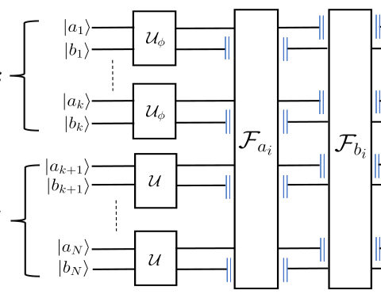
<figcaption class="paper-figure-caption"><b>Fig 1.</b> FIG. 1. Schematic representation of a linear-optical interferometric architecture for multiphoton phase estimation. The input state consists of N single photons distributed across 2N optical modes. The photons evolve under a global unitary transformation comprises a phase- dependent interferometric network that simultaneously generates multipartite path entanglement and encodes the unknown phase parameter φ, followed by a quantum Fourier transform F, which coherently redistributes the optical amplitudes among all modes. Within the phase- encoding network, individual interferometric blocks implement either the phase shift φ or the identity operation, thereby imprinting the phase information...</figcaption>
</figure>
<figure class="paper-figure-card">
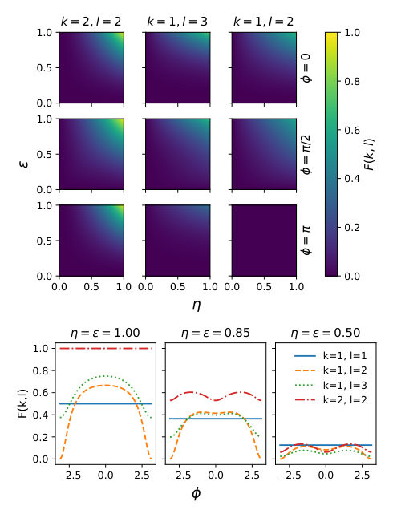
<figcaption class="paper-figure-caption"><b>Fig 2.</b> FIG. 2. The table highlights the suppression of multiphoton advan- tage under loss. The CFI in a two-receiver configuration is shown in (a) as a function of the loss parameters ε and η for represen- tative values of φ, k, and l, and (b) as a function of the phase φ for different loss regimes. Increasing loss progressively suppresses the multiphoton enhancement, leading to a systematic reduction in phase-estimation performance</figcaption>
</figure>
<figure class="paper-figure-card">
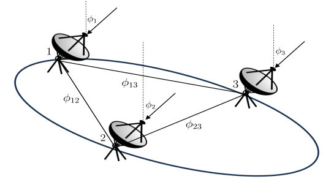
<figcaption class="paper-figure-caption"><b>Fig 3.</b> FIG. 3. Schematic of a three-receiver single-photon optical telescope for multiparameter phase estimation. A single photon is coherently distributed among three spatial modes associated with the three receivers. The relative phases between the modes are encoded through the optical path differences between the source and the corresponding receivers, with one mode chosen as an arbitrary phase reference to remove the global phase freedom. The resulting probe state contains the relevant relative phase information and is characterised by a full-rank quantum Fisher information matrix. The three pairwise baselines provide multiparameter estimation and precision analysis via the quantum Cramér–Rao...</figcaption>
</figure>
<figure class="paper-figure-card">
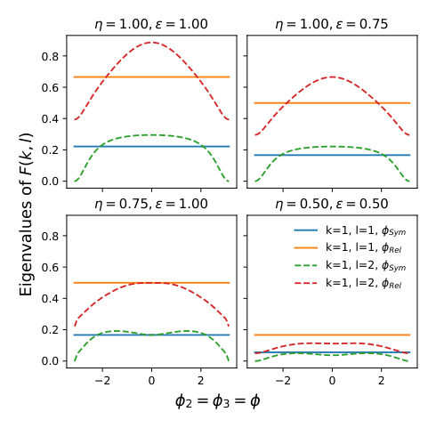
<figcaption class="paper-figure-caption"><b>Fig 4.</b> FIG. 4. Illustrates CFI under transmission loss. The eigenvalues of the CFI matrix are evaluated for N-photon state undergoing lossy evolution, with ε and η denoting the transmissivities of the phase and reference modes, respectively. Results are shown for N = 2 and N = 3, corresponding to the photon-number partitions (k,l) = (1,1) and (1,2) under the constraint φ2 = φ3. Increasing the number of reference photons initially improves the precision of relative-phase estimation. However, this improvement persists only up to a critical balance between η and ε. Beyond this point, the metrological ad- vantage is lost, resulting in reduced sensitivity.</figcaption>
</figure>
</div>

<p><strong>Summary.</strong> This paper develops a comprehensive theory for enhancing phase estimation sensitivity in optical interferometers using multiphoton states. It derives the optimal conditions for photon distribution—favoring balance—and quantifies how measurement techniques (like number-resolving detection) maintain quantum advantages even when realistic photon loss is present. The results establish a scalable framework for quantum-enhanced distributed metrology.</p>
<p><strong>Why it may be interesting.</strong> This work provides a rigorous theoretical framework for quantum metrology in photonic systems, directly addressing how entanglement and measurement choice can overcome classical limits, which is central to quantum information science applications like quantum communication and sensing.</p>
<details>
<summary>Detailed structure</summary>
<p><strong>Main problem.</strong> The paper investigates how to achieve optimal phase estimation sensitivity in quantum interferometry using multiphoton states.</p>
<p><strong>Main result.</strong> Maximum phase sensitivity is achieved when the input photons are distributed symmetrically between the phase-encoding and reference blocks, leading to a phase-independent response for $\varphi 
eq 0$.</p>
<p><strong>Method.</strong> The authors derive the classical Fisher Information (CFI) by calculating probability amplitudes using matrix permanents and analyzing the second derivatives of the detection probabilities with respect to the unknown phase.</p>
<p><strong>Model / system.</strong> The system is a linear-optical interferometer designed for phase estimation, utilizing $N$ separable photon inputs that evolve into number-path entangled states via unitary transformations (like QFTs) followed by photon-number-resolving detection.</p>
<p><strong>Key observables.</strong> Classical Fisher Information (CFI), phase sensitivity, and the probability of observing specific output photon-number configurations ($\vec{n}$).</p>
<p><strong>Important parameters / regimes.</strong> Total photon number ($N$), imbalance parameter ($\Delta = |k - l|/N$), and photon loss parameters ($\epsilon, \eta$).</p>
<p><strong>Assumptions / limitations.</strong> The analysis relies on the small-phase approximation ($\varphi \simeq 0$) for initial derivations, and later incorporates models for realistic photon loss.</p>
<p><strong>Figures summary.</strong> Figures schematically illustrate the interferometric architecture (FIG. 1) and show how CFI depends on phase ($    ext{FIG. 2}$), while tables quantify CFI under varying conditions like imbalance or loss.</p>
<p><strong>Paper structure.</strong> The paper progresses from deriving the ideal CFI for balanced partitions, to analyzing the impact of photon loss by comparing detection schemes (homodyne vs. number-resolving), and finally extending the framework to multi-mode distributed sensing.</p>
</details>
<details>
<summary>Abstract</summary>
<p>We investigate interferometric phase-estimation using separable photon inputs that evolve into number-path entangled states through linear optical networks, followed by photon-number-resolving detection. A simple analytical expression for the classical Fisher information at zero phase is derived for arbitrary $N$-photon states distributed across 2$N$ optical modes, partitioned into phase-encoding and reference blocks. Among all possible photon distributions between these blocks, the balanced configuration maximizes the phase sensitivity for every photon number $N$ and uniquely exhibits a phase-independent response. The achievable sensitivity degrades monotonically with increasing asymmetry in the photon distribution. We further investigate the robustness of the protocol in the presence of realistic photon loss and extend the analysis to distributed architectures with multiple receivers. In the low photon-flux regime, vacuum fluctuations fundamentally limit local quadrature measurements, whereas nonlocal photon-number-resolving measurements exploit multiphoton interference to mitigate loss-induced sensitivity degradation. Together, these results establish a scalable framework for quantum-enhanced distributed multimode metrology.</p>
</details>
<p><sub><a href="#top">↑ back to top</a></sub></p>

<p><a id="paper-2608.03543"></a></p>
<h3 id="manipulation-of-localized-excitons-in-crpsmath610math-by-temperature-and-magnetic-field"><a href="http://arxiv.org/abs/2608.03543v1">Manipulation of localized excitons in CrPS$_4$ by temperature and magnetic field</a></h3>
<p><strong>Authors:</strong> Dipankar Jana, Swagata Acharya, Amit Pawbake, Dmitrii Litvinov, Aljoscha Soll, Zdenek Sofer, Clement Faugeras, Dimitar Pashov, Mark van Schilfgaarde, Kostya S. Novoselov, Marek Potemski, Maciej Koperski<br>
<strong>Type:</strong> both · <strong>Category:</strong> strongly correlated electrons · <strong>PDF:</strong> <a href="https://arxiv.org/pdf/2608.03543v1">https://arxiv.org/pdf/2608.03543v1</a><br>
<strong>Analysis basis:</strong> full PDF text, analyzed in chunks
<strong>Topic relevance:</strong> <code>exotic spin models in light-matter</code> <strong>3/5</strong> · <code>spintronics-quantum-optics interface</code> <strong>3/5</strong> · <code>Keldysh / 2PI / non-Gaussian methods</code> <strong>1/5</strong> · <code>analog quantum simulation</code> <strong>1/5</strong> · <code>driven-dissipative phase transition</code> <strong>1/5</strong></p>
<div class="figure-strip-hint">↔ Scroll figures horizontally</div>
<div class="paper-figures-scroll">
<figure class="paper-figure-card">
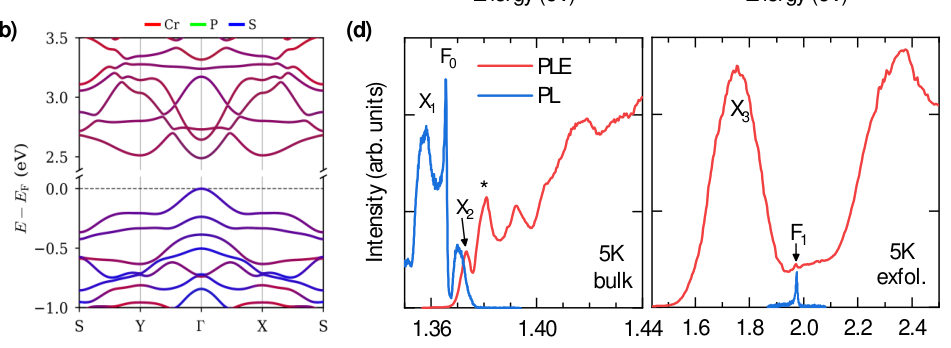
<figcaption class="paper-figure-caption"><b>Fig 1.</b> FIG. 1. (a) Schematic crystallographic and magnetic structure of CrPS4 in the antiferromagnetic phase. Gray, green, and yellow spheres denote chromium, sulfur, and phosphorus atoms, respectively. Images generated using the VESTA software package [34]. (b) Electronic band structure of CrPS4 in the AFM phase. The Fermi level is set to zero. The red- and blue- colored bands correspond to Cr and S ions, respectively. (c) Optical absorption spectra of CrPS4 computed using the QSG ˆW method for the spin-allowed transitions and the DMFT method for the spin-flip transition. An artificial linewidth of 3 meV broadens all features. (d) Low-temperature (5 K) PL and PLE spectra of CrPS4, measured on a...</figcaption>
</figure>
<figure class="paper-figure-card">
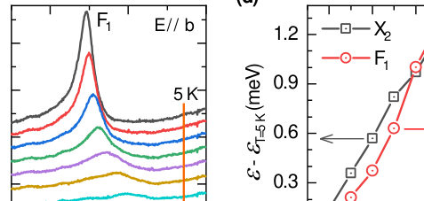
<figcaption class="paper-figure-caption"><b>Fig 2.</b> FIG. 2. (a) Unpolarized PLE spectra and (a) linear polarization resolved PL spectra of bulk CrPS4 at some selected tempera- tures. Spectra are vertically shifted for clarity. PL spectra acquired with E ∥b-axis are scaled by a factor of 5. Vertical dotted lines serve as a guide to the temperature-dependent peak shift of the dominant transitions, while the horizontal dotted lines in the PLE plot correspond to the background level. (c) PL spectra of bulk CrPS4 in the high-energy region, measured in the E ∥b-axis configuration with 5 K temperature intervals. Temperature-dependent (d) peak shifts of the X2 and F1 transitions and (e) integrated intensities of the X1, X2, and F1 transitions. The...</figcaption>
</figure>
<figure class="paper-figure-card">
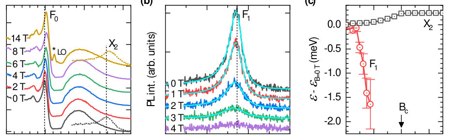
<figcaption class="paper-figure-caption"><b>Fig 3.</b> FIG. 3. Low-temperature PL spectra of bulk CrPS4 as a function of a magnetic field applied perpendicular to the sample plane (E ∥c-axis) in (a) low-energy and (b) high-energy spectral windows. Vertical dashed lines serve as visual guides for field-dependent peak shift. ’*LO’ corresponds to the phonon replica of spin-flip transition ’*’ [38]. (c) Magnetic field dependence of the peak energies of the X2 and F1 transitions. The vertical arrow indicates the critical saturation field (Bc=8 T) at which CrPS4 undergoes a transition from canted AFM to a FM state.</figcaption>
</figure>
<figure class="paper-figure-card">
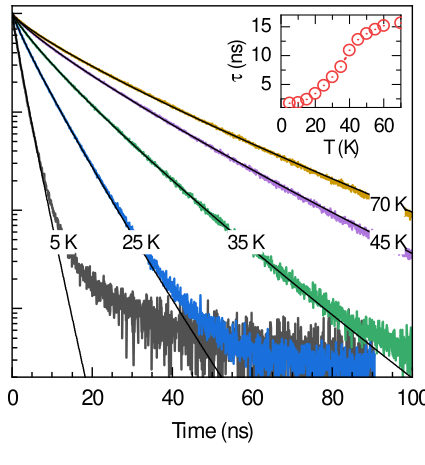
<figcaption class="paper-figure-caption"><b>Fig 4.</b> FIG. 4. Temporal decay profile of the X1 PL intensity at some selected temperatures. All decay profiles are normalized to their peak intensity. The black lines denote fits to the data using a single stretched-exponential decay function. The inset shows the estimated temperature dependence of the decay time of X1 transition.</figcaption>
</figure>
<figure class="paper-figure-card">
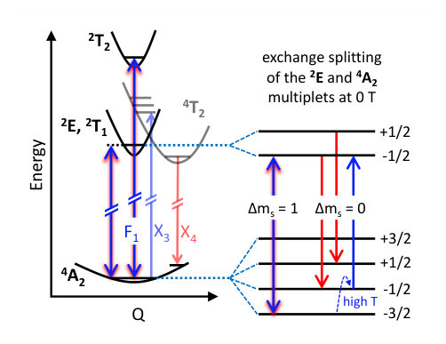
<figcaption class="paper-figure-caption"><b>Fig 5.</b> FIG. 5. Schematic configuration-coordinate diagram for the d3 electronic configuration within the Tanabe–Sugano frame- work. The extended energy scheme, considering exchange splitting of the 2E and 4A2 states, is shown on the right. The electronic excitations (emissions) are shown by blue (red) ver- tical arrows.</figcaption>
</figure>
</div>

<p><strong>Summary.</strong> The study investigates excitonic behavior in the layered antiferromagnetic semiconductor $ ext{CrPS}_4$ using both advanced theory and detailed optical measurements. Researchers found that temperature and magnetic fields induce measurable shifts in exciton energies, providing clear spectroscopic signatures of magnetic phase transitions. This work highlights the potential for all-optical control and sensing of magnetic order in these correlated materials.</p>
<p><strong>Why it may be interesting.</strong> This work is highly relevant as it uses optical spectroscopy to map out the complex interplay between electronic excitations (excitons) and magnetic order parameters in a solid-state material, touching upon concepts central to quantum magnetism and correlated materials physics.</p>
<details>
<summary>Detailed structure</summary>
<p><strong>Main problem.</strong> The study investigates excitonic phenomena in $   ext{CrPS}_4$, focusing on how these optical properties are intertwined with the material's spin and lattice degrees of freedom, particularly concerning magnetic ordering.</p>
<p><strong>Main result.</strong> The research establishes that $    ext{CrPS}_4$ is a direct-gap semiconductor whose low-energy excitonic transitions exhibit clear, measurable energy shifts corresponding to magnetic phase transitions (AFM $\leftrightarrow$ PM).</p>
<p><strong>Method.</strong> A combination of advanced theoretical calculations (MBPT, DMFT, QSG$\hat{	ext{W}}$) and detailed experimental measurements (low-temperature PL/PLE spectroscopy under varying temperature and magnetic fields) was employed.</p>
<p><strong>Model / system.</strong> The system is $ ext{CrPS}_4$, a layered antiferromagnetic van der Waals semiconductor. The theoretical framework models excitons interacting with spin and lattice degrees of freedom, while experiments probe these interactions optically.</p>
<p><strong>Key observables.</strong> Exciton transition energies ($\sim 1.36 	ext{ eV}$), bandgap energy ($2.48 	ext{ eV}$ in AFM phase), temperature-dependent peak shifts, and exciton decay rates ($    au$).</p>
<p><strong>Important parameters / regimes.</strong> Temperature (up to $300 	ext{ K}$), magnetic field (up to $8 	ext{ T}$), and activation energies ($E_a = 80 \pm 10 	ext{ meV}$).</p>
<p><strong>Assumptions / limitations.</strong> The analysis often relies on modeling exciton population transfer between localized states ($    ext{X}1 
ightarrow   ext{X}4$) using rate equations, and assuming simplified background behavior in intensity fitting.</p>
<p><strong>Figures summary.</strong> Figures illustrate the crystal structure, calculated band/optical spectra for different magnetic phases, and temperature/field dependence of PL intensities showing characteristic energy shifts and quenching behaviors.</p>
<p><strong>Paper structure.</strong> The paper progresses from theoretical predictions of electronic structure (bandgap, excitons) to experimental characterization of these features under varying external stimuli (T, B), culminating in detailed analysis of exciton population dynamics via temperature-dependent decay modeling.</p>
</details>
<details>
<summary>Abstract</summary>
<p>Layered van der Waals magnetic semiconductors provide a versatile platform for exploring excitonic phenomena intertwined with spin and lattice degrees of freedom, enabling excitons to act as sensitive probes of magnetic order. CrPS$_4$ is a layered antiferromagnetic semiconductor that hosts rich excitonic features whose microscopic origin and connection to magnetic ordering remain incompletely understood. Here, we investigate the electronic and excitonic properties of bulk CrPS$_4$ using a combination of many-body perturbation theory, dynamical mean-field theory, and photoluminescence-based experiments. Our calculations establish CrPS$_4$ as a direct-gap semiconductor with a bandgap of 2.48~eV in the antiferromagnetic phase. Several sub-bandgap excitonic transitions are predicted by theory, comprising multiple spin-allowed excitons and an additional spin-flip excitation, predominantly localized on the Cr$^{3+}$ ions. Temperature- and magnetic-field-dependent optical measurements reveal thermally driven exciton redistribution among localized states and identify characteristic energy shifts that provide clear optical signatures of magnetic phase transitions in CrPS$_4$. These results provide new insights into the excitonic transitions of antiferromagnets and suggest potential routes for all-optical sensing and light-driven control of their magnetic order.</p>
</details>
<p><sub><a href="#top">↑ back to top</a></sub></p>

<p><a id="paper-2608.03472"></a></p>
<h3 id="matrix-product-evolution-a-method-for-simulating-quantum-circuits-using-tensor-networks"><a href="http://arxiv.org/abs/2608.03472v1">Matrix Product Evolution: A Method for Simulating Quantum Circuits Using Tensor Networks</a></h3>
<p><strong>Authors:</strong> Haruyuki Kawabe, Minoru Nagai, Tsuyoshi Okubo, Synge Todo<br>
<strong>Type:</strong> theory · <strong>Category:</strong> numerical methods · <strong>PDF:</strong> <a href="https://arxiv.org/pdf/2608.03472v1">https://arxiv.org/pdf/2608.03472v1</a><br>
<strong>Analysis basis:</strong> full PDF text, analyzed in chunks
<strong>Topic relevance:</strong> <code>entanglement &amp; information structure</code> <strong>3/5</strong> · <code>methods for driven-dissipative</code> <strong>3/5</strong> · <code>non-equilibrium dynamics</code> <strong>2/5</strong> · <code>analog quantum simulation</code> <strong>1/5</strong></p>
<div class="figure-strip-hint">↔ Scroll figures horizontally</div>
<div class="paper-figures-scroll">
<figure class="paper-figure-card">
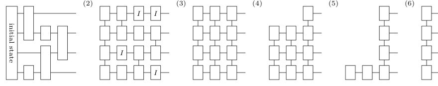
<figcaption class="paper-figure-caption"><b>Fig 1.</b> FIG. 1. Overview of the tensor-network representation and contraction strategy underlying the MPE-based simulation for a quantum circuit. (1) An input quantum circuit consisting of an initial state and a sequence of quantum gates. (2–6) Construction of a corresponding tensor network, insertion of identity tensors, temporal compression of the tensor network, successive contraction of MPEs, and final contraction yielding the output quantum state.</figcaption>
</figure>
<figure class="paper-figure-card">
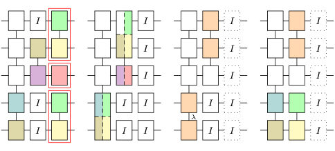
<figcaption class="paper-figure-caption"><b>Fig 2.</b> FIG. 2. Procedure of the temporal compression. (1) Each red box indicates a local tensor block to be processed. (2) The block is contracted with the nearest nontrivial tensors on its left (earlier time step). (3a) The result is factorized by an SVD along the spatial direction; if the spatial bond dimension λ is at most four, the merge is accepted and the all-identity columns (dotted) vacated by the merge are removed. (3b) If it exceeds four, the merge is rejected and the block is packed leftward past the identity tensors.</figcaption>
</figure>
<figure class="paper-figure-card">
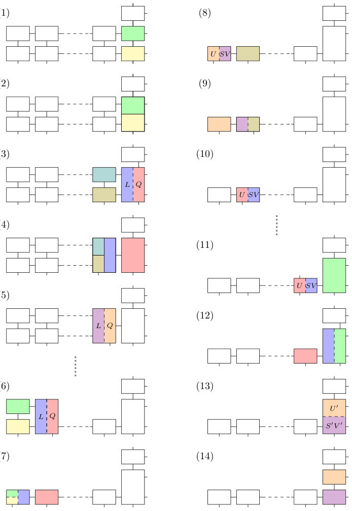
<figcaption class="paper-figure-caption"><b>Fig 3.</b> FIG. 3. Procedure for zipping up two MPEs. The process consists of three parts. In (1)–(7), tensors in adjacent MPEs are contracted, and the resulting lower-triangular matrix L is propagated toward the left. In (8)–(12), singular value decomposition is performed, and the singular values S together with the right unitary matrix V are propagated toward the right. In (13)–(14), an MPS representation of the final state is constructed.</figcaption>
</figure>
<figure class="paper-figure-card">
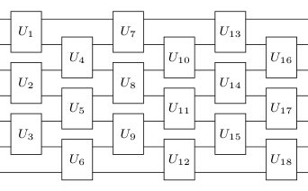
<figcaption class="paper-figure-caption"><b>Fig 4.</b> FIG. 4. Example of a quantum circuit composed of randomly- generated unitary gates Uj. This example illustrates a 7-qubit circuit with depth 6.</figcaption>
</figure>
<figure class="paper-figure-card">
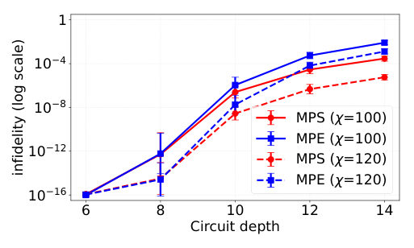
<figcaption class="paper-figure-caption"><b>Fig 5.</b> FIG. 5. Approximation errors of the MPS- and MPE-based methods for random quantum circuits on 14 qubits with max- imum bond dimensions χ = 120 and 100, compared with the exact results. The horizontal axis represents the circuit depth. The plotted values show the mean over 10 independent trials, and the error bars indicate the corresponding variance. The initial state is fixed to the product state |0⟩⊗n, and no post- selection is applied. Values below 10−16 are within machine precision and can be regarded as effectively zero.</figcaption>
</figure>
</div>

<p><strong>Summary.</strong> This paper introduces Matrix Product Evolution (MPE), a novel tensor network method that represents quantum circuits by compressing them along the circuit's time depth. It details an efficient contraction strategy, demonstrating that MPE can achieve higher accuracy than standard MPS methods when post-selection is applied to the final state, making it valuable for simulating complex quantum dynamics.</p>
<p><strong>Why it may be interesting.</strong> For AMO physicists studying open quantum systems or dynamics, MPE offers a powerful tool to simulate time evolution where entanglement structure is complex; the explicit handling of temporal correlations via depth compression is valuable for understanding circuit complexity beyond simple spatial bipartitions.</p>
<details>
<summary>Detailed structure</summary>
<p><strong>Main problem.</strong> Classical simulation of quantum circuits is limited by Hilbert space size, necessitating efficient tensor network representations.</p>
<p><strong>Main result.</strong> Matrix Product Evolution (MPE) provides a depth-oriented tensor network representation that can outperform standard MPS when post-selection is involved, particularly in reducing temporal entanglement contributions to the error.</p>
<p><strong>Method.</strong> The authors introduce MPE, which represents circuits as 2D tensor networks compressed along the circuit depth using an exact 'temporal compression' procedure. Simulation proceeds via a specialized 'zip-up contraction' strategy.</p>
<p><strong>Model / system.</strong> The method is tested on random quantum circuits and time evolution simulations of the quantum Ising model acting on multiple qubits (e.g., 14 qubits).</p>
<p><strong>Key observables.</strong> Fidelity ($|\langle\varphi|\varphi_0
angle|^2$), Infidelity ($1 - |\langle\varphi|\varphi_0
angle|^2$), and singular value distributions.</p>
<p><strong>Important parameters / regimes.</strong> Maximum temporal bond dimension ($\chi$), circuit depth (number of gates/Trotter steps), and the degree of post-selection ($p$).</p>
<p><strong>Assumptions / limitations.</strong> The method relies on controlling approximation error via truncation ($\chi$) during tensor contraction, and its advantage is highlighted when post-selection constrains temporal degrees of freedom.</p>
<p><strong>Figures summary.</strong> Figures compare infidelity (MPE vs MPS) for random circuits and the Ising model, showing MPE's superior performance with post-selection. They also illustrate the procedural steps for temporal compression and zipping up tensors.</p>
<p><strong>Paper structure.</strong> The paper first introduces MPE as a depth-based tensor representation, details the exact temporal compression and zip-up contraction procedures, and then compares its numerical behavior against standard MPS methods using random circuits and structured Hamiltonian evolution (Ising model) with post-selection diagnostics.</p>
</details>
<details>
<summary>Abstract</summary>
<p>Classical simulation of quantum circuits is an essential tool in quantum information science, but its applicability is constrained by the exponential growth of the Hilbert space and the entanglement structure of quantum states. In this work, we introduce Matrix Product Evolution (MPE), a tensor-train representation of quantum circuits constructed along the circuit depth rather than along the qubit index. Within this formulation, the simulation of a quantum circuit is modeled as the contraction of multiple MPE tensors. We develop an efficient contraction strategy based on a zip-up procedure to carry out this contraction in practice. We investigate the numerical behavior of this MPE-based contraction framework through simulations of random quantum circuits and the time evolution of a quantum many-body state. Our results characterize the growth of temporal bond dimensions, clarify how post-selection modifies the contraction cost and approximation accuracy, and identify regimes in which depth-oriented tensor-network contractions provide a useful complement to standard MPS-based simulation approaches.</p>
</details>
<p><sub><a href="#top">↑ back to top</a></sub></p>

<p><a id="paper-2608.03870"></a></p>
<h3 id="surface-selective-probe-of-spin-triplet-superconductivity-in-rhombohedral-graphene"><a href="http://arxiv.org/abs/2608.03870v1">Surface-Selective Probe of Spin-Triplet Superconductivity in Rhombohedral Graphene</a></h3>
<p><strong>Authors:</strong> Kilian Krötzsch, Zekang Zhou, Kryštof Kolář, Yonggen Li, Kenji Watanabe, Takashi Taniguchi, Moty Heiblum, Cyprian Lewandowski, Mitali Banerjee<br>
<strong>Type:</strong> both · <strong>Category:</strong> strongly correlated electrons · <strong>PDF:</strong> <a href="https://arxiv.org/pdf/2608.03870v1">https://arxiv.org/pdf/2608.03870v1</a><br>
<strong>Analysis basis:</strong> full PDF text, analyzed in chunks
<strong>Topic relevance:</strong> <code>exotic spin models in light-matter</code> <strong>3/5</strong> · <code>spintronics-quantum-optics interface</code> <strong>3/5</strong> · <code>Keldysh / 2PI / non-Gaussian methods</code> <strong>1/5</strong> · <code>Kondo &amp; dissipative impurity</code> <strong>1/5</strong> · <code>quantum measurements</code> <strong>1/5</strong></p>
<div class="figure-strip-hint">↔ Scroll figures horizontally</div>
<div class="paper-figures-scroll">
<figure class="paper-figure-card">
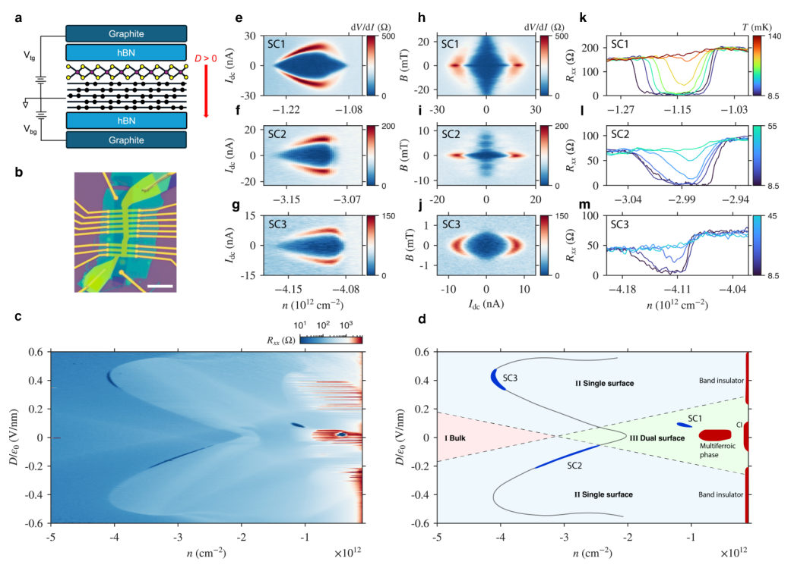
<figcaption class="paper-figure-caption"><b>Fig 1.</b> FIG. 1. Superconductivity in WS2-proximized R5G. a, Longitudinal resistance Rxx as a function of carrier density n and displacement field D/ε0 at B = 0 T and T ≃8.5 mK. b, Schematic of the phase diagram in a, labeling the bulk regime (Region I), single-surface regime (Region II), dual-surface regime (Region III), the multiferroic phase, correlated insulating (CI) and band-insulating (BI) states, and the three superconducting pockets SC1–SC3. c, Device schematic: rhombohedral pentalayer graphene (R5G) proximized on one side by monolayer WS2, encapsulated by hBN, and contacted by top and bottom graphite gates. The red arrow denotes the positive-D convention. d, Optical micrograph of the...</figcaption>
</figure>
<figure class="paper-figure-card">
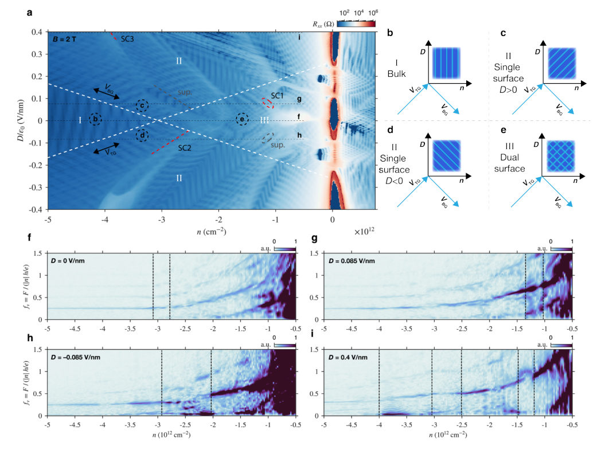
<figcaption class="paper-figure-caption"><b>Fig 2.</b> FIG. 2. Quantum oscillations and gate-tracking features of WS2-proximitized R5G. a, Longitudinal resistance Rxx as a function of carrier density n and displacement field D/ε0 at B = 2 T. On the hole-doped side, the phase diagram separates into the bulk regime (Region I), single-surface regime (Region II), and dual-surface regime (Region III), bounded by gate- tracking features (white dashed lines). The superconducting pockets SC1 and SC2 (red dashed outlines), their suppressed or strongly weakened counterparts (“sup.”), and SC3 are marked. Black arrows indicate the directions of the bottom- and top-gate voltage axes, VBG and VTG; letters denote the positions corresponding to the schematics...</figcaption>
</figure>
<figure class="paper-figure-card">
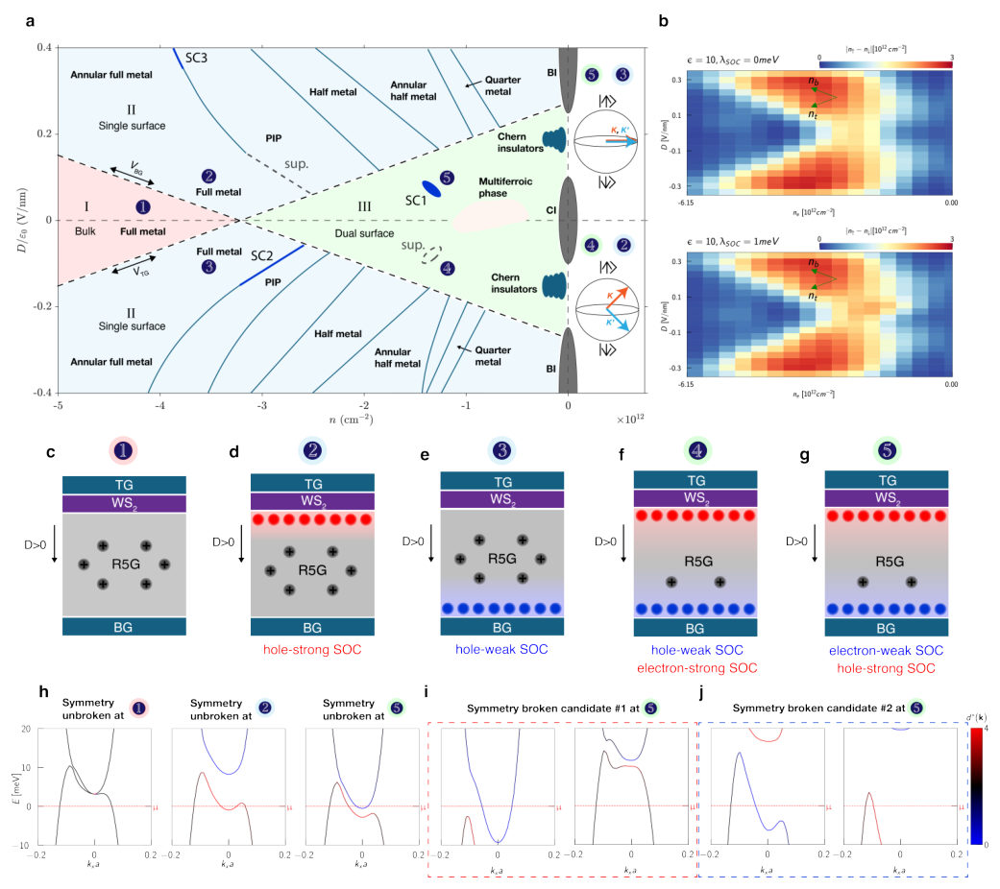
<figcaption class="paper-figure-caption"><b>Fig 3.</b> FIG. 3. Normal-state fermiology and surface-selective spin-orbit coupling. a, Schematic n–D phase diagram of the hole-doped side obtained from the analysis of Fig. 2. Region I is a bulk-like full metal. Region II contains single-surface metallic states, including full-metal, partially isospin-polarized (PIP), half-metallic, annular half-metallic, and quarter-metallic regimes. Region III contains dual-surface metallic, correlated insulating (CI), and multiferroic phases, terminating in band-insulating (BI) states at large |D|. Circled numerals 1–5 mark representative positions shown in c–g and h–j; SC1, SC2, and SC3 are indicated. Insets illustrate the valley-contrasting Ising SOC induced by...</figcaption>
</figure>
</div>

<p><strong>Summary.</strong> This research uses surface-selective measurements on graphene proximitized by WS2 to investigate the spin structure of superconductivity. By observing how superconducting pockets appear or disappear depending on carrier polarization relative to the interface, the authors provide strong evidence supporting a spin-triplet pairing mechanism. The combination of advanced transport measurements and theoretical modeling makes this a powerful tool for studying correlated electron phenomena in 2D materials.</p>
<p><strong>Why it may be interesting.</strong> The work provides a highly tunable platform for probing exotic superconducting symmetries in 2D materials. The use of proximity coupling as a 'spin probe' is valuable because it allows researchers to selectively perturb and measure specific components of the pairing order parameter, which is crucial for understanding unconventional superconductivity mechanisms.</p>
<details>
<summary>Detailed structure</summary>
<p><strong>Main problem.</strong> To obtain complementary probes of the superconducting spin structure in rhombohedral graphene, as direct magnetic field probing is challenging due to multiple possible microscopic mechanisms for field-robust superconductivity.</p>
<p><strong>Main result.</strong> The surface-selective proximity coupling to WS2 acts as a displacement-field-tunable probe, providing evidence for spin-triplet superconductivity by observing superconducting asymmetry dependent on carrier polarization relative to the interface.</p>
<p><strong>Method.</strong> The study combines low-temperature magnetotransport measurements (measuring $R_{xx}$ and differential resistance) with theoretical self-consistent band structure calculations using a mean-field Hartree-Fock approach.</p>
<p><strong>Model / system.</strong> The system is rhombohedral pentalayer graphene (R5G) proximitized on one side by WS2. The physics involves analyzing the interplay between superconducting pairing, induced Ising spin-orbit coupling (SOC), and carrier polarization across different electronic regimes (bulk vs. surface pockets).</p>
<p><strong>Key observables.</strong> Superconducting pocket robustness ($   ext{SC1},   ext{SC2},   ext{SC3}$), asymmetry in superconductivity under displacement field reversal, quantum oscillation patterns, and Fermi-surface topology.</p>
<p><strong>Important parameters / regimes.</strong> Low temperature ($T \simeq 8.5 	ext{ mK}$), zero magnetic field ($   ext{B}=0    ext{ T}$), and the magnitude of the displacement field ($D/\epsilon_0$).</p>
<p><strong>Assumptions / limitations.</strong> The analysis assumes that the observed asymmetry is due to the surface-selective nature of the Ising SOC, which competes with different pairing symmetries.</p>
<p><strong>Figures summary.</strong> Figures illustrate longitudinal resistance vs. carrier density and displacement field, quantum oscillation patterns in gate voltage planes, and schematics detailing the three distinct superconducting pockets ($ ext{SC1}-   ext{SC3}$).</p>
<p><strong>Paper structure.</strong> The paper first establishes the experimental platform using magnetotransport measurements to map out superconducting regimes based on external fields. It then uses quantum oscillations and band structure calculations to characterize the underlying electronic topology (Fermi surface). Finally, it integrates these findings by analyzing how the SOC modifies the pairing state, leading to the conclusion about spin-triplet superconductivity.</p>
</details>
<details>
<summary>Abstract</summary>
<p>Superconductivity in rhombohedral graphene has been observed across many layer numbers, with mounting evidence pointing toward spin-triplet pairing, yet complementary probes of the superconducting spin structure remain needed. Here we use one-sided WS$_2$ proximity in rhombohedral pentalayer graphene (R5G) as a surface-selective spin-orbit probe. The induced Ising spin-orbit coupling is strongest for carriers localized near the WS$_2$ interface, allowing the displacement field to tune the overlap between superconducting carriers and the spin-orbit perturbation. We observe a strongly asymmetric superconducting landscape: two robust pockets, SC1 and SC2, survive only on mutually opposite signs of displacement field, while a third pocket, SC3, is substantially weaker. Gate-tracking features, quantum oscillations, and self-consistent band-structure calculations identify the layer polarization and Fermi-surface character of the relevant carriers. The robust superconducting states are absent or strongly weakened when the active high-DOS carriers are polarized toward the WS$_2$ interface. Since Ising spin-orbit coupling is compatible with time-reversed spin-singlet pairing but competes with same-spin intervalley triplet pairing by canting or pinning the parent spin texture, this surface-selective suppression provides additional evidence for spin-triplet superconductivity involving both hole-like and electron-like carriers. Our results establish one-sided TMD proximity as a displacement-field-tunable probe of superconducting spin structure in rhombohedral graphene.</p>
</details>
<p><sub><a href="#top">↑ back to top</a></sub></p>

<p><a id="paper-2608.03523"></a></p>
<h3 id="the-new-high-entropy-compound-rhmnfecoge4-with-cubic-non-centrosymmetric-b20-structure"><a href="http://arxiv.org/abs/2608.03523v1">The New High-entropy Compound RhMnFeCoGe4 with Cubic Non-centrosymmetric B20 Structure</a></h3>
<p><strong>Authors:</strong> V. A. Sidorov, V. N. Krasnorussky, A. V. Bokov, Z. N. Volkova, A. P. Gerashchenko, N. M. Chtchelkatchev, M. V. Magnitskaya, D. A. Salamatin, A. V. Semeno, V. V. Brazhkin, A. V. Tsvyashchenko<br>
<strong>Type:</strong> both · <strong>Category:</strong> strongly correlated electrons · <strong>PDF:</strong> <a href="https://arxiv.org/pdf/2608.03523v1">https://arxiv.org/pdf/2608.03523v1</a><br>
<strong>Analysis basis:</strong> full PDF text, analyzed in chunks
<strong>Topic relevance:</strong> <code>exotic spin models in light-matter</code> <strong>3/5</strong> · <code>spintronics-quantum-optics interface</code> <strong>3/5</strong> · <code>Keldysh / 2PI / non-Gaussian methods</code> <strong>1/5</strong> · <code>Kondo &amp; dissipative impurity</code> <strong>1/5</strong> · <code>analog quantum simulation</code> <strong>1/5</strong></p>
<div class="figure-strip-hint">↔ Scroll figures horizontally</div>
<div class="paper-figures-scroll">
<figure class="paper-figure-card">
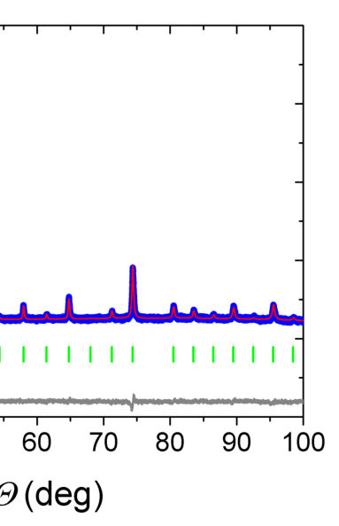
<figcaption class="paper-figure-caption"><b>Fig 1.</b> Figure 1: The XRD pattern of the RhMnFeCoGe4 compound. The blue dots represent the experimental data, the red line - fitting by Rietveld method, the gray line depicts the difference between the experiment and fitting, and the green ticks indicate the Bragg positions for the B20 structure. Asterisks denote the most intense peaks from the Fe1.67Ge impurity.</figcaption>
</figure>
<figure class="paper-figure-card">
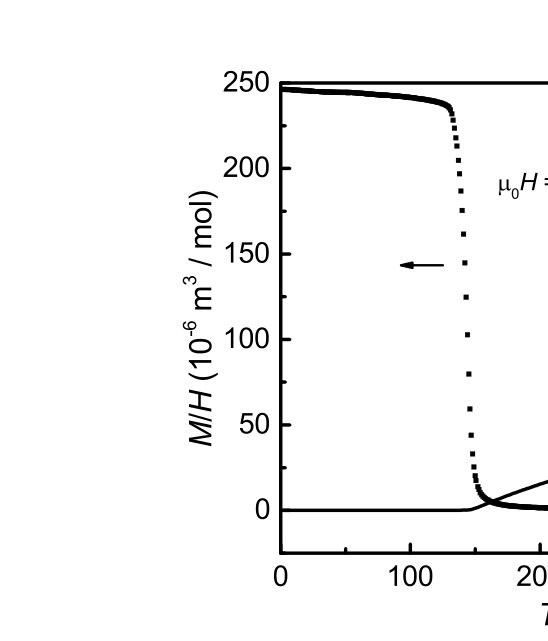
<figcaption class="paper-figure-caption"><b>Fig 2.</b> Figure 2: The temperature dependence of the magnetic susceptibility M/(µ0H) of the RhMnFeCoGe4 compound (left scale), measured in a field of µ0H = 0.01 T, and inverse magnetic susceptibility χ−1 = (µ0H)/M as a function of temperature (right scale). Red line - is a Curie-Weiss fit of χ−1 in a linear high-T region with µef f = 4.0 µB/f.u. and Curie-Weiss temperature Θ = 186 K.</figcaption>
</figure>
<figure class="paper-figure-card">
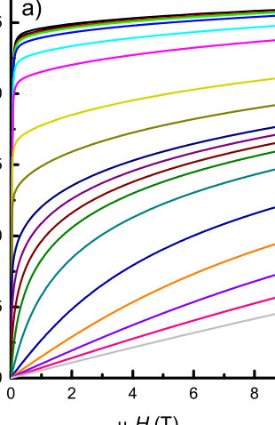
<figcaption class="paper-figure-caption"><b>Fig 3.</b> Figure 3: Isotherms of magnetization of the RhMnFeCoGe4 compound for temperatures in the range 2-260 K (panel a), spontaneous magnetization MS , obtained at µ0H = 9 T as a function of temperature (panel b).</figcaption>
</figure>
<figure class="paper-figure-card">
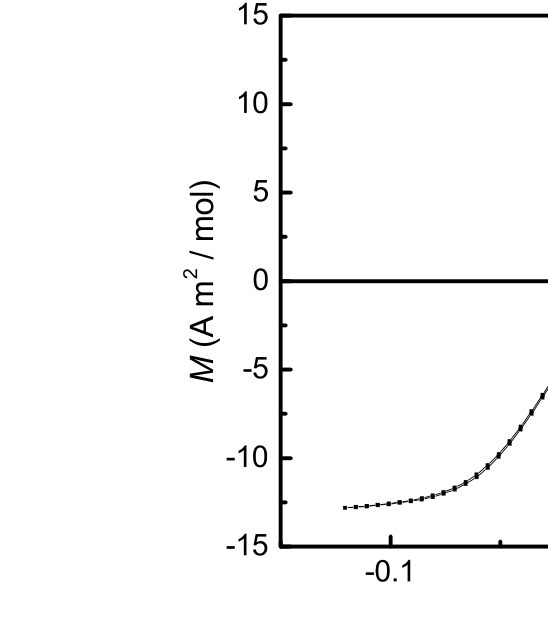
<figcaption class="paper-figure-caption"><b>Fig 4.</b> Figure 4: The magnetization of the RhMnFeCoGe4 compound, obtained at T = 2.0 K. Inset - an expanded region in proximity of µ0H = 0. The numbered arrows illustrate the variation in µ0H, which is represented by the following sequence: 1) an initial increase up to 9 T (black line), 2) a decrease in the field (red), and 3) a subsequent increase (blue).</figcaption>
</figure>
<figure class="paper-figure-card">

<figcaption class="paper-figure-caption"><b>Fig 5.</b> Figure 5: The magnetic phase diagram of the RhMnFeCoGe4 compound. The points were identified as local minimums of the second derivative of the magnetization curve, the line is a guide for the eye. Inset demonstrate M(µ0H) (points) and d2M/d(µ0H)2 (line) dependencies as a function of magnetic field µ0H at T = 5 K. The position of the µ0HC2 is indicated by a vertical dashed line.</figcaption>
</figure>
</div>

<p><strong>Summary.</strong> This work reports on the synthesis and comprehensive characterization of a novel high-entropy compound, RhMnFeCoGe4, which crystallizes in a B20 structure. The material is found to be ferromagnetic with a critical temperature of 146 K. By combining magnetic measurements, NMR spectroscopy, and DFT calculations, the authors map out its electronic structure and how its magnetic properties respond to external pressure.</p>
<p><strong>Why it may be interesting.</strong> While primarily condensed matter physics, the detailed study of magnetic phase transitions and electronic band structures in complex, disordered materials like high-entropy alloys touches upon many-body interactions relevant to correlated electron systems.</p>
<details>
<summary>Detailed structure</summary>
<p><strong>Main problem.</strong> The study focuses on synthesizing and characterizing a novel high-entropy compound, RhMnFeCoGe4, which possesses a cubic non-centrosymmetric B20 structure.</p>
<p><strong>Main result.</strong> The material exhibits ferromagnetic behavior with a critical temperature of 146 K and a spontaneous moment of 2.5 mu_B per formula unit, showing magnetic properties sensitive to external pressure.</p>
<p><strong>Method.</strong> A combination of experimental techniques (XRD, VSM, NMR) and theoretical calculations (ab initio DFT) was employed to investigate its electronic and magnetic structure.</p>
<p><strong>Model / system.</strong> The physical system is the high-entropy compound RhMnFeCoGe4, which adopts a cubic non-centrosymmetric B20 crystal structure. The research explores how magnetism and transport properties are governed by this complex composition under varying pressure conditions.</p>
<p><strong>Key observables.</strong> Ferromagnetic ordering ($T_C=146$ K), spontaneous magnetization ($2.5 \mu_B$), critical exponents ($eta, \gamma, \delta$), magnetic moments of constituent atoms (Mn: $2.2 \mu_B$, Co: $0.5 \mu_B$), and lattice parameters.</p>
<p><strong>Important parameters / regimes.</strong> Critical temperature ($T_C=146$ K), applied pressures (up to 8 GPa), temperatures (2–260 K), and magnetic fields ($\le 9$ T).</p>
<p><strong>Assumptions / limitations.</strong> The analysis assumes that the observed resistivity anomaly is due to chemical disorder, which was not fully accounted for in the initial <em>ab initio</em> simulations.</p>
<p><strong>Figures summary.</strong> Figures illustrate XRD patterns confirming the B20 structure; magnetization vs. temperature/field curves show ferromagnetic transitions and critical behavior; DOS and band structures compare paramagnetic and ferromagnetic states.</p>
<p><strong>Paper structure.</strong> The paper follows a standard materials science investigation: synthesis confirmation (XRD) $
ightarrow$ bulk magnetic characterization (VSM, critical exponents) $
ightarrow$ microscopic analysis (NMR, DFT calculations of DOS/band structure) $
ightarrow$ discussion of pressure effects.</p>
</details>
<details>
<summary>Abstract</summary>
<p>A novel high-entropy compound, RhMnFeCoGe$_4$, with a cubic non-centrosymmetric B20 struc- ture, has been synthesized under conditions of high pressure and temperature. The electrical transport and magnetic properties of the obtained compound at both ambient and elevated pres- sures have been investigated. In addition, nuclear magnetic resonance (NMR) spectra were obtained at 4.2 K and ab initio calculations were performed. The new material exhibits ferromag- netic behavior with a critical temperature of $T_C$ = 146 K and a spontaneous moment of 2.5 $μ_B$ per formula unit. The magnetization data obtained at the critical region yielded the critical temperature and exponents, which were found to be $T_C$ = 146(1) K, $β$ = 0.337(1), $γ$ = 1.121(1), and $δ$ = 4.326(1). The magnetic moments of Mn and Co were determined from NMR spectra to be 2.2 $μ_B$ and 0.5 $μ_B$, respectively. Ab initio calculations yielded reasonable values for the lattice parameter and the magnetic moments of all constituents. The density of states and band structure are determined for both paramagnetic and ferromagnetic states. Lattice compression results in the increase in the $T_C$.</p>
</details>
<p><sub><a href="#top">↑ back to top</a></sub></p>

<p><a id="paper-2608.03414"></a></p>
<h3 id="magnetoresistance-in-magnetic-weyl-semimetal-mnmath651mathznc"><a href="http://arxiv.org/abs/2608.03414v1">Magnetoresistance in Magnetic Weyl semimetal Mn$_{3}$ZnC</a></h3>
<p><strong>Authors:</strong> Sunil Gangwar, C. S. Yadav<br>
<strong>Type:</strong> both · <strong>Category:</strong> strongly correlated electrons · <strong>PDF:</strong> <a href="https://arxiv.org/pdf/2608.03414v1">https://arxiv.org/pdf/2608.03414v1</a><br>
<strong>Analysis basis:</strong> full PDF text, analyzed in chunks
<strong>Topic relevance:</strong> <code>spintronics-quantum-optics interface</code> <strong>3/5</strong> · <code>Kondo &amp; dissipative impurity</code> <strong>1/5</strong> · <code>analog quantum simulation</code> <strong>1/5</strong> · <code>exotic spin models in light-matter</code> <strong>1/5</strong> · <code>non-equilibrium dynamics</code> <strong>1/5</strong></p>
<div class="figure-strip-hint">↔ Scroll figures horizontally</div>
<div class="paper-figures-scroll">
<figure class="paper-figure-card">

<figcaption class="paper-figure-caption"><b>Fig 1.</b> Figure 1. Magnetic field dependent magnetoresistance (MR) of Mn3ZnC in the temperature range (a) 1.8 - 180 K, and (b) 190 - 300 K. (c) Critical magnetic field B∗as a function of temperature. (d) Carrier mobility µ and MR slope as a function of temperature.</figcaption>
</figure>
<figure class="paper-figure-card">

<figcaption class="paper-figure-caption"><b>Fig 2.</b> Figure 2. (a) Contour plot of MR % in the temperature range of 1.8 - 160 K up to 3 T applied magnetic field. (b) Isothermal magnetization as a function of magnetic field at 2 K and 300 K. Inset shows the critical magnetization values as a function of temperature. (c) Magnetization as a function of temperature at H= 1 T applied magnetic field. Inset shows the magnetic crsytal structures in ferrimagnetic and ferromagnetic states. (d) MR % as a function of temperature at 180 K.</figcaption>
</figure>
<figure class="paper-figure-card">

<figcaption class="paper-figure-caption"><b>Fig 3.</b> Figure 3. (a) Contour plot of MR % in the temperature range of 190 - 300 K up to 0.5 T applied magnetic field. (b) MR % curves as a function of field in the temperature range of T = 1.8 – 160 K, fitted with MR ∝Hp power law. (c) MR % curves as a function of field in the temperature range of T = 210 – 300 K, fitted with MR ∝Hp power law. The insets in (b) and (c) show the temperature dependence of the exponent p. (d) MR % curves as a function of magnetization in the temperature range of T = 210 – 300 K, fitted with MR ∝M β power law.</figcaption>
</figure>
<figure class="paper-figure-card">

<figcaption class="paper-figure-caption"><b>Fig 4.</b> Figure 4 shows the temperature dependence of MR, which decreases monotonically as the temperature in- creases. The value of MR is ∼0.8 %, at 1.8 K, and reaches to - 0.23 % at room temperature. The magni- tude of MR is small, owing to the low carrier mobility in the compound. A sign reversal is observed around 120 K, which coincides with a sharp drop in carrier mobility at roughly the same temperature. The sign change in MR observed in various materials and has been associated with the interplay between carrier mobility and scatter- ing mechanisms [30, 31]. Similarly, for Mn3ZnC, the car-</figcaption>
</figure>
<figure class="paper-figure-card">

<figcaption class="paper-figure-caption"><b>Fig 5.</b> Figure 4. Magnetoresistance as a function of temperature at H = 8 T field.</figcaption>
</figure>
</div>

<p><strong>Summary.</strong> This paper reports on magnetoresistance measurements in the magnetic nodal line semimetal Mn3ZnC, demonstrating a clear link between MR anomalies and the material's ferromagnetic/ferrimagnetic transitions. By analyzing how MR changes with field and temperature relative to magnetization, the authors suggest that quantum transport effects related to spin-dependent scattering govern the electronic behavior.</p>
<p><strong>Why it may be interesting.</strong> While focused on condensed matter magnetism, the strong dependence of electronic transport properties (MR) on spin polarization and topological band structure provides insights into emergent quantum phenomena relevant to correlated electron systems.</p>
<details>
<summary>Detailed structure</summary>
<p><strong>Main problem.</strong> The study investigates magnetoresistance (MR) in magnetic topological semimetals to understand how spin-dependent electron scattering mechanisms couple with magnetic ordering.</p>
<p><strong>Main result.</strong> The MR behavior is strongly correlated with the material's magnetic state (FM vs. FIM), showing distinct field and temperature dependencies that suggest quantum transport effects dominate over classical models.</p>
<p><strong>Method.</strong> The research combines experimental measurements of MR versus applied magnetic field and temperature with theoretical analysis comparing observed power laws to established quantum transport theories.</p>
<p><strong>Model / system.</strong> The system under study is Mn3ZnC, an antiperovskite nodal line semimetal exhibiting both ferromagnetic (FM) and ferrimagnetic (FIM) transitions. The analysis draws parallels with general topological magnetic materials.</p>
<p><strong>Key observables.</strong> Magnetoresistance (MR), magnetization ($M$), carrier mobility ($\mu$), and the field/temperature dependence of MR power laws ($  ext{MR} \propto H^p$ or $   ext{MR} \propto M^eta$).</p>
<p><strong>Important parameters / regimes.</strong> Magnetic transition temperatures ($\sim 420	ext{ K}$ FM, $\sim 195	ext{ K}$ FIM), low-field critical fields ($B^*$), and high magnetic field regimes ($\geq 2	ext{ T}$).</p>
<p><strong>Assumptions / limitations.</strong> The analysis tests applicability of various transport models (PL model, Guiding Center Diffusion) and ultimately favors quantum limit theories due to low sample mobility.</p>
<p><strong>Figures summary.</strong> Figures illustrate MR vs. H at varying T across magnetic transitions; contour plots show low-field MR dependence on field/temperature; magnetization curves track the FM/FIM states.</p>
<p><strong>Paper structure.</strong> The paper systematically analyzes MR data, first establishing the correlation between MR and $M(H)$ in different magnetic phases (FM vs. FIM). It then compares observed field dependencies to theoretical models before concluding with interpretations based on quantum transport limits.</p>
</details>
<details>
<summary>Abstract</summary>
<p>The magnetoresistance (MR) in magnetic materials reveal an intriguing spin-dependent electron scattering, highlighting the role of spin polarization on the electronic transport properties. This becomes even more interesting for the topological magnetic materials where a finite Berry curvature leads to an intrinsic scattering channel also. In this report, we investigate MR of Mn$_{3}$ZnC, an antiperovskite magnetic nodal line semimetal. Mn$_{3}$ZnC shows a ferromagnetic (FM) transition at $\sim$ 420 K, followed by an ferrimagnetic (FIM) transition at $\sim$ 195 K. We focus on the interpretation of MR data and highlight the relation between MR and its magnetization. The signature of magnetization induced MR shows correlation at low magnetic fields and displays distinct behaviors in the FIM and FM states. Similar to the isothermal magnetization M(H) curve of FM and FIM state, the MR curves exhibit a sharp increase, followed by a linear behavior at higher fields. As the magnetic field varies, the cusp-like anomaly becomes more pronounced, and vanishes at the magnetic phase transition, which then reappears as the temperature increases. The sign change in the MR curves in the FIM state is attributed to a drastic change in the carrier mobility. Interestingly, this system shows a positive MR in FM state at very low field, which is quite unusual.</p>
</details>
<p><sub><a href="#top">↑ back to top</a></sub></p>

<p><a id="paper-2608.03024"></a></p>
<h3 id="exotic-superconductivity-in-the-doped-kitaev-quantum-spin-liquid"><a href="http://arxiv.org/abs/2608.03024v1">Exotic superconductivity in the doped Kitaev quantum spin liquid</a></h3>
<p><strong>Authors:</strong> Takahiro Misawa, Kota Ido<br>
<strong>Type:</strong> theory · <strong>Category:</strong> strongly correlated electrons · <strong>PDF:</strong> <a href="https://arxiv.org/pdf/2608.03024v1">https://arxiv.org/pdf/2608.03024v1</a><br>
<strong>Analysis basis:</strong> full PDF text, analyzed in chunks
<strong>Topic relevance:</strong> <code>exotic spin models in light-matter</code> <strong>3/5</strong> · <code>analog quantum simulation</code> <strong>2/5</strong> · <code>Keldysh / 2PI / non-Gaussian methods</code> <strong>1/5</strong></p>
<div class="figure-strip-hint">↔ Scroll figures horizontally</div>
<div class="paper-figures-scroll">
<figure class="paper-figure-card">

<figcaption class="paper-figure-caption"><b>Fig 1.</b> FIG. 1. (a) Schematic phase diagrams as functions of the hole concentration δ for the ferromagnetic (K/t = −1) and anti- ferromagnetic (K/t = +1) Kitaev interactions. The shaded regions use the same colors as Figs. 2 and 3, and the phase boundaries are estimated from the L = 12 results. (b) Honey- comb lattice with the three bond types α ∈{x, y, z} and the corresponding nearest-neighbor form factors fx, fy, fz used to construct the pairing operators. (c) Distance dependence of the pairing correlation Dη α(r) for the four triplet form fac- tors (f, px, py, p + ip) in the Sz = 0 sector on the L = 12 cluster at δ ≃0.19 with the ferromagnetic Kitaev interaction (K/t = −1). The plateau for d...</figcaption>
</figure>
<figure class="paper-figure-card">

<figcaption class="paper-figure-caption"><b>Fig 2.</b> FIG. 2. Ferromagnetic Kitaev interaction (K/t = −1). (a) Doping dependence of the long-range-averaged py triplet superconducting correlation P all py = [(P T py)2 + (P ↑ py)2 + (P ↓ py)2]1/2 for L = 8, 10, and 12. (b) Total magnetization Mall for L = 8, 10, and 12. The dashed line shows the fully po- larized value (1 −δ)/2. The yellow shading marks the doping range where the triplet p-wave superconducting correlation is enhanced. The blue shading marks the doping range where the magnetization approaches the fully polarized value.</figcaption>
</figure>
<figure class="paper-figure-card">

<figcaption class="paper-figure-caption"><b>Fig 3.</b> FIG. 3. Antiferromagnetic Kitaev interaction (K/t = +1). (a) Doping dependence of representative long-range-averaged pairing correlations for L = 8, 10, and 12: Sz = 0 triplet py (brown: P T py), equal-spin triplet (blue: P ↑ px and red: P ↓ py), and singlet d + id (green: P S d+id). Two triplet regimes appear at low doping, one with and one without sizable P T py, followed by a narrow d+id regime and a high-doping regime with weak, size-dependent triplet correlations. The orange, magenta, and green shaded regions mark these two triplet regimes and the d + id regime, respectively. (b) Total magnetization Mall for L = 8, 10, and 12.</figcaption>
</figure>
</div>

<p><strong>Summary.</strong> The authors theoretically investigate exotic superconductivity in the doped Kitaev quantum spin liquid using variational Monte Carlo simulations. They find that superconducting pairing symmetries are highly dependent on doping and the sign of the Kitaev interaction, predicting robust triplet p-wave superconductivity coexisting with ferromagnetism for FM coupling. This work offers a theoretical roadmap for searching for such unconventional phases in real materials.</p>
<p><strong>Why it may be interesting.</strong> This work directly addresses unconventional superconductivity in a highly correlated magnetic system, providing concrete predictions—like triplet p-wave coexistence with magnetism—that guide experimental searches in candidate materials.</p>
<details>
<summary>Detailed structure</summary>
<p><strong>Main problem.</strong> The study investigates exotic superconducting phases, particularly triplet p-wave and singlet d+id pairing, that can coexist with ferromagnetism in a doped Kitaev quantum spin liquid.</p>
<p><strong>Main result.</strong> For ferromagnetic coupling, robust triplet superconductivity coexists with ferromagnetism at low to intermediate doping. For antiferromagnetic coupling, the superconducting symmetry changes from triplet p-wave to singlet d+id pairing as doping increases.</p>
<p><strong>Method.</strong> The research employs the many-variable variational Monte Carlo (mVMC) method using a projected pair-product wave function representation of the Kitaev quantum spin liquid.</p>
<p><strong>Model / system.</strong> The system is the hole-doped t-J-type Kitaev model on the honeycomb lattice, analyzed for both ferromagnetic ($K/t=-1$) and antiferromagnetic ($K/t=+1$) Kitaev interactions. The analysis covers doping regimes ($\delta$).</p>
<p><strong>Key observables.</strong> Superconducting pairing correlations (singlet/triplet), uniform magnetization per site ($M_\alpha$), and total magnetization ($M_{all}$).</p>
<p><strong>Important parameters / regimes.</strong> Doping concentration ($\delta$), Kitaev interaction strength ratio ($K/t$), and lattice size ($L=8, 10, 12$).</p>
<p><strong>Assumptions / limitations.</strong> The analysis relies on projecting the BCS state onto a fixed particle number sector to obtain the pair-product wave function $|\phi_{	ext{pair}}(F)
angle$. The fate in the thermodynamic limit remains an open question.</p>
<p><strong>Figures summary.</strong> Figures show phase diagrams vs. doping for FM/AFM cases, distance dependence of pairing correlations ($D_{\eta}^\alpha(r)$), and doping dependence of triplet correlation ($P_{all}^{py}$) alongside total magnetization ($M_{all}$).</p>
<p><strong>Paper structure.</strong> The paper systematically analyzes the superconducting ground state by first establishing the theoretical framework using projected wave functions (BdG approach) and then applying mVMC to calculate pairing correlations and magnetization across different doping regimes for both FM and AFM couplings.</p>
</details>
<details>
<summary>Abstract</summary>
<p>We investigate superconductivity in a doped Kitaev quantum spin liquid by applying the many-variable variational Monte Carlo method to the hole-doped $t$-$J$-type Kitaev model. Using a projected pair-product wave function that can exactly represent the Kitaev quantum spin liquid, we examine the stability of superconducting phases on isotropic two-dimensional clusters. For the ferromagnetic Kitaev interaction, robust triplet $p$-wave superconductivity coexists with ferromagnetism in the low-to-intermediate doping regime but is suppressed as the system approaches the fully polarized ferromagnetic phase. For the antiferromagnetic Kitaev interaction, superconductivity exhibits a change in the dominant pairing symmetry from spin-dependent triplet $p$-wave at low doping to singlet $d+id$ at intermediate doping. By varying the strength of the ferromagnetic Kitaev interaction at fixed doping, we show that the triplet superconductivity increases together with the ferromagnetic moment and becomes strongest slightly below full polarization. Our results provide a theoretical basis for experimental searches for unconventional superconductivity, such as triplet superconductivity coexisting with ferromagnetism, in carrier-doped Kitaev candidate materials.</p>
</details>
<p><sub><a href="#top">↑ back to top</a></sub></p>

<p><a id="paper-2608.02832"></a></p>
<h3 id="tunable-skyrmions-in-a-topological-wigner-crystal"><a href="http://arxiv.org/abs/2608.02832v1">Tunable Skyrmions in a Topological Wigner Crystal</a></h3>
<p><strong>Authors:</strong> David A. Dahlbom, Daniel Kaplan, Premala Chandra, Cristian D. Batista<br>
<strong>Type:</strong> theory · <strong>Category:</strong> strongly correlated electrons · <strong>PDF:</strong> <a href="https://arxiv.org/pdf/2608.02832v1">https://arxiv.org/pdf/2608.02832v1</a><br>
<strong>Analysis basis:</strong> full PDF text, analyzed in chunks
<strong>Topic relevance:</strong> <code>exotic spin models in light-matter</code> <strong>3/5</strong> · <code>analog quantum simulation</code> <strong>2/5</strong> · <code>Keldysh / 2PI / non-Gaussian methods</code> <strong>1/5</strong></p>
<div class="figure-strip-hint">↔ Scroll figures horizontally</div>
<div class="paper-figures-scroll">
<figure class="paper-figure-card">

<figcaption class="paper-figure-caption"><b>Fig 1.</b> Figure 1. Illustration of the topology-induced competition. (a) In the ferromagnetic Wigner crystal, the pseudospin degree of freedom is coupled ferromagnetically via a Heisenberg exchange J. Without any Berry flux, this state is fully polarized. In the presence of a finite Berry flux, three-particle exchange contributes an additional phase ΦB, which determines the chiral coupling γ. (b) As the chiral coupling is increased relative to J, the ferromagnet becomes unstable. At the critical value γ/J = √</figcaption>
</figure>
<figure class="paper-figure-card">

<figcaption class="paper-figure-caption"><b>Fig 2.</b> Figure 2. Comparison between the triple-Q ansatz of Eq. (31) and the numerically relaxed configuration ((a) and (b)) with Q = 0.0625 and γ = 0.93. The spatial distribution of the skyrmion density is largely preserved under relaxation, with only quantitative distortions of the profile ((c) and (d)), corre- sponding to a transfer of weight to lower-order Fourier com- ponents ((e) and (f), colors in log scale). The Brillouin zone boundary lies outside of the panel boundaries of (e) and (f); without log color scaling, weight would only be visible on the six innermost components in both cases.</figcaption>
</figure>
<figure class="paper-figure-card">

<figcaption class="paper-figure-caption"><b>Fig 3.</b> Figure 3. Long-wavelength phase diagram for the Hamiltonian of Eq. (1) including lattice corrections up to quartic order in inverse skyrmion lengthscale 1/λ. “FP” is the fully polarized phase, and “Double Skx” is a crystal of double skyrmions. The spin texture of the Double Skx phase is illustrated in Fig. 2.</figcaption>
</figure>
<figure class="paper-figure-card">

<figcaption class="paper-figure-caption"><b>Fig 4.</b> Figure 4. (a) Phase diagram for the Hamiltonian of Eq. (1) as determined from numerical simulations on a lattice. The color gradient, drawn from a grid of unbiased simulations beginning with γ = 1.3, represents the skyrmion density ρsk. With in- creasing γ, the phases develop from a fully polarized (FP) order into a double skyrmion crystal (Double Skx). The skyrmion density increases with larger γ until finally transitioning into a tetra-skyrmion state with uniform scalar spin chirality and four skyrmions per magnetic unit cell (Tetra Skx). The phase boundary between the FP and Double Skx phases illustrated in Fig 5 (d) is shown in red dots and lines. The prediction of the long wavelength...</figcaption>
</figure>
<figure class="paper-figure-card">

<figcaption class="paper-figure-caption"><b>Fig 5.</b> Figure 5. Behavior of the optimized double skyrmion ansatz approaching the transition to the fully polarized state. (a) Evolution of the skyrmion density ρsk as a function of field for a range of small γ values above the transition. (b) Phase boundary determined by an interpolated numerical study of the ansatz (blue dots) together with the lower-bound on the phase boundary predicted by the rigid approximation [Eq. (39)]. The rigid approximation remains good up to about γ = 1.1. (c) Evolution of the magnetization M as a function of field for a series of γ values. (d) Magnetization of the ansatz just below the saturation field hsat.</figcaption>
</figure>
</div>

<p><strong>Summary.</strong> The paper theoretically investigates the formation of skyrmion crystals in Wigner solids whose underlying band structure imparts Berry curvature. By modeling the competition between Heisenberg and chiral interactions, the authors show that the system's topological texture density is continuously tunable via the ratio of these coupling constants. This establishes a comprehensive phase diagram for ferromagnetic topological Wigner crystals.</p>
<p><strong>Why it may be interesting.</strong> This work connects topological quantum geometry (Berry curvature) directly to emergent magnetic textures (skyrmions) in strongly correlated electron systems, providing a theoretical framework for understanding exotic electronic states beyond simple magnetism.</p>
<details>
<summary>Detailed structure</summary>
<p><strong>Main problem.</strong> Investigating how topological textures, specifically skyrmions, emerge and are stabilized in Wigner crystals when underlying electronic bands possess Berry curvature.</p>
<p><strong>Main result.</strong> The competition between ferromagnetic exchange ($J$) and chiral interaction ($\gamma$) stabilizes a zero-field tunable skyrmion crystal whose density can be continuously tuned by the ratio $\gamma/J$.</p>
<p><strong>Method.</strong> A combination of continuum field theory (nonlinear sigma model) applied to a discrete triangular lattice, supplemented by gradient expansion techniques up to fourth order.</p>
<p><strong>Model / system.</strong> The system models low-density electrons forming a Wigner solid on a triangular lattice. The effective spin Hamiltonian includes Heisenberg exchange ($J$) and a chiral three-spin interaction ($\gamma$), which originates from the Berry curvature of the underlying electronic bands.</p>
<p><strong>Key observables.</strong> Skyrmion density ($
ho_{sk}$), topological charge ($N_{sk}$), magnon structure, and the Dynamical Spin Structure Factor (DSSF).</p>
<p><strong>Important parameters / regimes.</strong> The ratio $\gamma/J$ is crucial for tuning skyrmion density; extreme coupling leads to a 24-site tetra-skyrmion crystal.</p>
<p><strong>Assumptions / limitations.</strong> The analysis assumes a regular triangular lattice structure and relies on expanding the Hamiltonian in spatial derivatives up to fourth order in the continuum limit.</p>
<p><strong>Figures summary.</strong> Figures illustrate the phase diagram showing transitions from ferromagnetic Wigner crystals to double-skyrmion crystals, culminating in the tetra-skyrmion crystal at large chiral coupling ($\gamma/J \geq 4$).</p>
<p><strong>Paper structure.</strong> The paper progresses from defining the microscopic Hamiltonian on the lattice, deriving the continuum sigma model, analyzing energy contributions via gradient expansion (up to fourth order), and finally characterizing specific complex phases like the tetra-skyrmion crystal using real and momentum space representations.</p>
</details>
<details>
<summary>Abstract</summary>
<p>In low density systems with strong interactions electrons are expected to crystallize into a Wigner solid. Recently, advances in two-dimensional systems where electrons carry Berry curvature have added a topological dimension to Wigner crystallization. Using a model for pseudospin interactions in a topological Wigner crystal, here we show that the competition between ferromagnetic Heisenberg exchange $J$ and the chiral interaction $γ$ on the triangular lattice stabilizes a zero-field skyrmion crystal whose density is continuously tunable through the ratio $γ/J$. The chiral interaction originates from finite Berry curvature in an underlying time-reversal broken Wigner crystal. In the continuum limit, the chiral interaction acts as a chemical potential for skyrmions, while higher-order gradient terms beyond the nonlinear sigma model select the skyrmion density. At large chiral coupling, we uncover a 24-site tetra-skyrmion crystal carrying four units of topological charge per magnetic unit cell, which becomes degenerate with four-sublattice tetrahedral order as $J \to 0$. We characterize the magnon structure for these phases and discuss the transition between the tunable skyrmion crystal to these states at large $γ/J$. Our results establish the phase diagram of ferromagnetic topological Wigner crystals.</p>
</details>
<p><sub><a href="#top">↑ back to top</a></sub></p>

<p><a id="paper-2608.03193"></a></p>
<h3 id="contrasting-anisotropic-electron-phonon-spin-coupling-in-femath693mathgetemath694math-and-femath695mathgetemath696math-a-helicity-resolved-raman-study"><a href="http://arxiv.org/abs/2608.03193v1">Contrasting anisotropic electron-phonon-spin coupling in Fe$_{3}$GeTe$_{2}$ and Fe$_{5}$GeTe$_{2}$: A helicity-resolved Raman study</a></h3>
<p><strong>Authors:</strong> Smrutiranjan Mekap, Jyoti Saini, Andrzej Ptok, Pawan Kumar Srivastava, Changgu Lee, Subhasis Ghosh, Anushree Roy<br>
<strong>Type:</strong> experiment · <strong>Category:</strong> strongly correlated electrons · <strong>PDF:</strong> <a href="https://arxiv.org/pdf/2608.03193v1">https://arxiv.org/pdf/2608.03193v1</a><br>
<strong>Analysis basis:</strong> full PDF text, analyzed in chunks
<strong>Topic relevance:</strong> <code>spintronics-quantum-optics interface</code> <strong>3/5</strong> · <code>exotic spin models in light-matter</code> <strong>1/5</strong></p>
<div class="figure-strip-hint">↔ Scroll figures horizontally</div>
<div class="paper-figures-scroll">
<figure class="paper-figure-card">

<figcaption class="paper-figure-caption"><b>Fig 1.</b> Figure 1. Crystal structure of (a) F3GT, and (b) F5GT. Fe, Ge, and Te atoms are shown with colored solid balls. vdW gaps between layers are shown by a pair of yellow dashed lines. The polarised M–T curves measured for in-plane and out-of-plane magnetic fields for (c) F3GT, and (d) F5GT. For descriptions of arrows, refer to the text.</figcaption>
</figure>
<figure class="paper-figure-card">

<figcaption class="paper-figure-caption"><b>Fig 2.</b> Figure 1(c) and (d) present the temperature-dependent magnetization measured with a magnetic field applied along the ab plane and the c axis for F3GT and F5GT, respectively. Both compounds undergo a paramagnetic (PM)-to-ferromagnetic (FM) transition, with TC ≈223</figcaption>
</figure>
<figure class="paper-figure-card">

<figcaption class="paper-figure-caption"><b>Fig 3.</b> Figure 2. Raman spectra of (a) F3GT, and (b) F5GT at 80 K under RL configuration. The measured spectra are shown with + symbols, and the net fitted spectra are shown by blue curves. The deconvoluted A and E modes are shown by cyan and orange shaded areas, respectively. The red dashed line marks the difference in Raman shift of these two compounds for an A1 mode.</figcaption>
</figure>
<figure class="paper-figure-card">

<figcaption class="paper-figure-caption"><b>Fig 4.</b> Figure 3. Magnified helicity-resolved Raman spectra in RL and LR configurations at 80 K are presented by blue and red symbols, respectively, for (a) F3GT, and (b) F5GT. The dashed lines mark the maximum of the Raman peak positions in these configurations. The comparison between M −T in the ab-plane and ∆f −T for (c) F3GT and (d) F5GT. The variation of ∆f with in-plane magnetization for (e) F3GT, and (f) F5GT. Error bars with ∆f in panels (c)–(f) are estimated using the mean and standard deviation of the Raman shift obtained from a non-linear curve fitting procedure, and then following the propagation of error method. The color shades mark the one-to-one correspondence between ∆f and M...</figcaption>
</figure>
<figure class="paper-figure-card">

<figcaption class="paper-figure-caption"><b>Fig 5.</b> Figure 4(a)–(b) present the polar plots of the intensity of the A1 and E1 modes of F3GT at regular intervals of scattering directions for the incident RCP and LCP light at 80 K. In non-resonant helicity-resolved Raman scattering, the scattering intensity for the Ra-</figcaption>
</figure>
</div>

<p><strong>Summary.</strong> The research uses helicity-resolved Raman spectroscopy to compare the electron-phonon-spin coupling in $   ext{Fe}_3   ext{GeTe}_2$ and $  ext{Fe}_5   ext{GeTe}_2$. The findings reveal that this coupling is complex, stemming from spin-orbit interactions rather than just magnetic ordering. This highlights how crystal structure dictates the nature of anisotropic light-matter interaction in these layered magnets.</p>
<p><strong>Why it may be interesting.</strong> This work provides experimental insight into how lattice vibrations couple anisotropically with spin-orbit coupled electronic states in magnetic materials, which is crucial for understanding emergent quantum phenomena in condensed matter systems.</p>
<details>
<summary>Detailed structure</summary>
<p><strong>Main problem.</strong> The study aims to comparatively investigate anisotropic electron-phonon-spin coupling mechanisms in two-dimensional van der Waals ferromagnets, $ ext{Fe}_3   ext{GeTe}_2$ and $  ext{Fe}_5   ext{GeTe}_2$.</p>
<p><strong>Main result.</strong> The helicity-dependent Raman response is shown to arise from spin-orbit-coupled electronic interactions rather than solely from time-reversal symmetry breaking due to magnetic order. Furthermore, the crystal structure dictates distinct coupling behaviors between the two compounds.</p>
<p><strong>Method.</strong> Helicity-resolved Raman spectroscopy was employed, utilizing left- and right-circularly polarized excitations across varying temperatures and wavelengths.</p>
<p><strong>Model / system.</strong> The physical systems are layered metallic ferromagnets: $   ext{Fe}_3   ext{GeTe}_2$ (hexagonal) and $  ext{Fe}_5   ext{GeTe}_2$ (rhombohedral). The analysis focuses on the interplay between lattice vibrations, electronic structure, and magnetic ordering in these materials.</p>
<p><strong>Key observables.</strong> Chiral mode splitting ($\Delta f$), Fano asymmetry parameter ($1/q$), and polarization-dependent Raman intensities derived from helicity-resolved measurements.</p>
<p><strong>Important parameters / regimes.</strong> Temperature dependence of coupling strengths; the difference between out-of-plane vs. in-plane magnetization effects on coupling anisotropy.</p>
<p><strong>Assumptions / limitations.</strong> The analysis assumes that the observed spectral features can be decomposed into contributions from electron-phonon, spin-orbit, and magnetic ordering effects using symmetry group theory for Raman tensor fitting.</p>
<p><strong>Figures summary.</strong> Figures illustrate unit cells for both compounds; polarization dependence plots (e.g., in VH configuration) are used to analyze mode symmetries and coupling mechanisms.</p>
<p><strong>Paper structure.</strong> The paper establishes the context of 2D van der Waals ferromagnets, details the comparative measurements on $  ext{F}3 ext{GT}$ and $  ext{F}5 ext{GT}$, presents spectroscopic evidence regarding chiral splitting and Fano parameters, and concludes by relating structural differences to distinct coupling dynamics.</p>
</details>
<details>
<summary>Abstract</summary>
<p>Two-dimensional van der Waals ferromagnets Fe$_3$GeTe$ _2$ (F3GT) and Fe$_5$GeTe$_2$ (F5GT) exhibit pronounced magneto-optical responses, which open promising platforms for investigating the interplay among lattice, electronic, and magnetic degrees of freedom. Here, we present a comparative study of optical resonance-induced anisotropic electron-phonon coupling and its association with magnetic ordering in these systems using wavelength- and temperature-dependent helicity-resolved Raman spectroscopy. By resolving the doubly degenerate E modes under left- and right-circularly polarized excitations, we demonstrate that the temperature evolution of the chiral mode splitting ($Δf$) does not track the magnetization behavior, indicating that the helicity-dependent Raman response arises not solely from time-reversal symmetry breaking due to magnetic order, but also from spin-orbit-coupled electronic interactions. Notably, in F3GT, the out-of-plane magnetization indirectly governs the in-plane anisotropic electron-phonon coupling under optical resonance, whereas F5GT exhibits static anisotropic interactions. The Fano asymmetry parameter $1/q$ reveals mode- and temperature-dependent coupling strengths between phonons and the electronic continuum, with pronounced angular anisotropy in F3GT but isotropic behavior in F5GT--- a consequence of its multiple Fe sites and enhanced interlayer hybridization in the latter. Our results demonstrate the role of crystal structure and magnetic anisotropy in shaping the anisotropically coupled electron-phonon-spin dynamics in these layered metallic ferromagnets, and highlight Fe$_x$GeTe$_2$ as a versatile platform for microscopic insight into chiral light-matter interactions in layered metallic ferromagnets.</p>
</details>
<p><sub><a href="#top">↑ back to top</a></sub></p>

<p><a id="paper-2608.03549"></a></p>
<h3 id="gravitational-redshift-as-a-quantum-channel-modeling-the-effects-of-gravitational-redshift-in-quantum-optics"><a href="http://arxiv.org/abs/2608.03549v1">Gravitational redshift as a quantum channel: modeling the effects of gravitational redshift in quantum optics</a></h3>
<p><strong>Authors:</strong> Thomas Mieling, Andreas Wolfgang Schell, David Edward Bruschi<br>
<strong>Type:</strong> theory · <strong>Category:</strong> quantum information and computing · <strong>PDF:</strong> <a href="https://arxiv.org/pdf/2608.03549v1">https://arxiv.org/pdf/2608.03549v1</a><br>
<strong>Analysis basis:</strong> full PDF text, analyzed in chunks
<strong>Topic relevance:</strong> <code>Keldysh / 2PI / non-Gaussian methods</code> <strong>2/5</strong> · <code>entanglement &amp; information structure</code> <strong>2/5</strong> · <code>methods for driven-dissipative</code> <strong>2/5</strong> · <code>correlated / nonlocal dissipation</code> <strong>1/5</strong> · <code>driven-dissipative phase transition</code> <strong>1/5</strong> · <code>interference shaping light</code> <strong>1/5</strong> · <code>non-equilibrium dynamics</code> <strong>1/5</strong></p>
<div class="figure-strip-hint">↔ Scroll figures horizontally</div>
<div class="paper-figures-scroll">
<figure class="paper-figure-card">

<figcaption class="paper-figure-caption"><b>Fig 1.</b> Figure 1. Schematic depiction of the generic setup covered by this work. A photon can be exchanged by users placed at different locations in a stationary space-time. The figure is for illustration purposes only.</figcaption>
</figure>
<figure class="paper-figure-card">

<figcaption class="paper-figure-caption"><b>Fig 2.</b> Figure 2. Plots of the parameters 𝛾1 and 𝛾2, defined in Eqs. (24) and (25), that quantify the violation of the mmm model. Here, 𝛼= ln(𝜔0/𝜎) parametrizes the relative width of the Gaussian frequency spectra, where 𝜔0 is the central frequency and 𝜎is the spectral width. As expected, the unitarity of the matrix deteriorates for increasingly sharp Gaussian profiles.</figcaption>
</figure>
<figure class="paper-figure-card">

<figcaption class="paper-figure-caption"><b>Fig 3.</b> Figure 4. Alice-to-Bob-to-Alice protocol: A photon is sent from Alice to Bob, who receives it in general as a different wave packet (Panel a). Bob measures only the degrees of freedom previously agreed upon with Alice, prepares the new state, and sends it back to Alice (Panel b). Since part of the information is in general lost to unobservable modes, Alice will not receive the same wave packet as the one that she had sent (Panel c). The picture is for illustrative purposes only: the space-time is static and, in general, the round-trip protocol is best implemented using a ground station and a static rocket. A satellite in geostationary orbit can also be considered, however, Doppler shift due...</figcaption>
</figure>
</div>

<p><strong>Summary.</strong> This paper addresses the theoretical gap in describing gravitational redshift quantum mechanically. It proves that previous models are inconsistent and resolves this by formulating the effect as a well-defined quantum channel acting on Gaussian states of light. This allows researchers to use modern quantum information tools to analyze relativistic effects on quantum optical signals.</p>
<p><strong>Why it may be interesting.</strong> This work bridges general relativity with fundamental quantum information theory by providing rigorous tools (channel nonunitarity) to quantify relativistic effects on quantum light fields, which is highly relevant for quantum communication in curved spacetime.</p>
<details>
<summary>Detailed structure</summary>
<p><strong>Main problem.</strong> The primary challenge is developing a consistent quantum mechanical description of gravitational redshift, which has historically been modeled using flawed effective multi-mode mixers.</p>
<p><strong>Main result.</strong> The authors successfully model the effect as a genuine quantum channel when restricted to Gaussian states, allowing characterization using standard quantum information techniques like fidelity and channel nonunitarity.</p>
<p><strong>Method.</strong> The work involves analyzing spectral transformations derived from general relativity and correcting inconsistencies in previous models by employing field-theoretic methods and extending the description to unitary channels on larger Hilbert spaces.</p>
<p><strong>Model / system.</strong> The system is light propagating through a stationary spacetime, where the gravitational redshift induces an operator transformation $U_\chi$ on the spectral distribution functions of the photons. The analysis focuses on characterizing this transformation as a quantum channel.</p>
<p><strong>Key observables.</strong> Fidelity ($F_\chi$), Channel Nonunitarity ($\eta(\chi)$), and the overlap quantity $\Delta f(\chi) = (f, U_\chi f)$.</p>
<p><strong>Important parameters / regimes.</strong> The redshift factor $\chi = \sqrt{\zeta_a/\zeta_b}$ dictates the transformation; squeezing in the initial state is crucial for observing fidelity reduction.</p>
<p><strong>Assumptions / limitations.</strong> Previous models incorrectly assumed that the unitary operator $U_\chi$ could be represented by a finite-dimensional matrix, an assumption proven false for general physical spectra when $\chi 
eq 1$.</p>
<p><strong>Figures summary.</strong> Figures illustrate the violation of unitarity ($\gamma_1, \gamma_2$) in older models and show state evolution (e.g., Alice-to-Bob-to-Alice roundtrip) using fidelity measures.</p>
<p><strong>Paper structure.</strong> The paper progresses by first establishing the classical/wave-packet transformation; it then critiques existing multi-mode mixer models, proving their inconsistency; subsequently, it introduces two consistent corrections: a field-theoretic approach and the quantum channel formalism for Gaussian states.</p>
</details>
<details>
<summary>Abstract</summary>
<p>The gravitational frequency shift of light is well understood in the theory of classical electromagnetism. Nevertheless, its description in quantum theory is not yet fully developed. Recent work pointed out inconsistencies in previously developed models aimed at describing gravitational redshift as an effective multi-mode mixer (MMM) acting on modes of light, however, a complete solution of the issues was not obtained. Here, we identify the root cause of the MMM model's inconsistency and provide two complementary approaches to correct it: a "natural" one from a field-theoretic perspective, and another adapted to the language of quantum mechanics of finite-dimensional systems. We show that the second approach allows for modeling of the redshift in a multi-mode transmission setup as a quantum channel that can be characterized using standard quantum information-theoretic techniques when restricting the input states to Gaussian states of light.</p>
</details>
<p><sub><a href="#top">↑ back to top</a></sub></p>

<p><a id="paper-2608.02743"></a></p>
<h3 id="ramp-plateau-and-wormholes-without-averaging-and-hyper-non-perturbative-structures-in-gravity"><a href="http://arxiv.org/abs/2608.02743v1">Ramp, Plateau, and Wormholes without Averaging, and Hyper-non-perturbative Structures in Gravity</a></h3>
<p><strong>Authors:</strong> Hong Liu<br>
<strong>Type:</strong> theory · <strong>Category:</strong> other · <strong>PDF:</strong> <a href="https://arxiv.org/pdf/2608.02743v1">https://arxiv.org/pdf/2608.02743v1</a><br>
<strong>Analysis basis:</strong> full PDF text, analyzed in chunks
<strong>Topic relevance:</strong> <code>non-equilibrium dynamics</code> <strong>2/5</strong> · <code>Keldysh / 2PI / non-Gaussian methods</code> <strong>1/5</strong> · <code>analog quantum simulation</code> <strong>1/5</strong> · <code>correlated / nonlocal dissipation</code> <strong>1/5</strong> · <code>driven-dissipative phase transition</code> <strong>1/5</strong> · <code>entanglement &amp; information structure</code> <strong>1/5</strong> · <code>methods for driven-dissipative</code> <strong>1/5</strong> · <code>non-equilibrium universality</code> <strong>1/5</strong> · <code>scars &amp; prethermalization</code> <strong>1/5</strong></p>
<div class="figure-strip-hint">↔ Scroll figures horizontally</div>
<div class="paper-figures-scroll">
<figure class="paper-figure-card">

<figcaption class="paper-figure-caption"><b>Fig 1.</b> FIG. 1. From topology to hyper-structures: wormholes demand a multiverse; from the multiverse emerge hyper-structures. The inclusion of wormhole topologies naturally necessitates an arbitrary number of disconnected boundaries, described by the multiverse Hilbert space Hmultiverse. Within Hmultiverse, one can construct “coherent states” corresponding to emergent hyper-structures, anal- ogous to the construction of D-branes as boundary states in the closed string Hilbert space. In the cartoon above, a hyper-structure is depicted as a “brane” on which spacetime boundaries can anchor. This is purely a visual metaphor; in higher-dimensional gravities, there is no physical target space in which...</figcaption>
</figure>
<figure class="paper-figure-card">

<figcaption class="paper-figure-caption"><b>Fig 2.</b> FIG. 2. Cis-dipole and trans-dipole. (a): Z+ +(E, E + ϵ). (b): Z− +(E, E + ϵ). The two horizontal lines represent the upper (+) and lower (−) banks of the cut along the E-axis. Alternatively, by analytically continuing the values from the lower bank under the cut onto the adjacent Riemann sheet, these lines can also be viewed as representing the E-axis on two neighboring sheets. The filled red and blue circles denote ∆(E) and ∆−1(E), respectively.</figcaption>
</figure>
<figure class="paper-figure-card">

<figcaption class="paper-figure-caption"><b>Fig 3.</b> FIG. 3. The conventions are the same as those in Fig. 2, with R+(E + ϵ) represented by a red dot. (a) R+(E + ϵ) and the trans-dipole Z− +(E, E + ϵ) form a nontrivial three-body bound con- figuration (2.63) in the ϵ →0 limit, represented on the right by the dashed box. R+(E + ϵ) is deliberately separated from ∆−1 + (E + ϵ) for visualization purposes. The contractions between ∆−(E) and ∆−1 + (E +ϵ) are represented by a thick blue line (yielding a contribution proportional to ϵ), while the contraction between R+(E+ϵ) and ∆−(E) is represented by a red dashed line (yielding a contribution proportional to 1/ϵ). Note that after contraction R+(E + ϵ) has been “absorbed” by the dipole background,...</figcaption>
</figure>
<figure class="paper-figure-card">

<figcaption class="paper-figure-caption"><b>Fig 4.</b> FIG. 4. While the ramp arises from correlations between two resolvents residing on different branches (as illustrated in (a)), the plateau arises from correlations between two trans-bound resol- vents of opposite orientations (as illustrated in (b)). Conventions follow those of Fig. 2 and Fig. 3.</figcaption>
</figure>
<figure class="paper-figure-card">

<figcaption class="paper-figure-caption"><b>Fig 5.</b> FIG. 5. (a) Analytic continuation of ∆−(E) from E &gt; E0 to E &lt; E0 through the lower half-plane of the physical sheet (only the physical sheet shown). (b) Analytic continuation of ∆−(E) from E &gt; E0 to E &lt; E0 by passing under the branch cut and moving through the upper half-plane of the second sheet. The branch cuts are represented by thick red lines.</figcaption>
</figure>
</div>

<p><strong>Summary.</strong> This paper proposes a novel method to derive universal features of quantum chaos and gravity without invoking ensemble averaging. By applying a 'smooth filter projection' to semiclassical formulas, the authors show that phenomena like spectral ramps emerge from single-system physics. This framework establishes a deep duality, predicting corresponding double exponential corrections in both quantum many-body systems and gravitational wormhole dynamics.</p>
<p><strong>Why it may be interesting.</strong> While highly theoretical, the focus on extracting macroscopic smooth behavior from underlying chaotic/erratic microscopic data mirrors techniques used in analyzing complex many-body dynamics where averaging approximations are often employed.</p>
<details>
<summary>Detailed structure</summary>
<p><strong>Main problem.</strong> The paper reinterprets universal features of quantum chaos (like spectral ramps/plateaus) and their gravitational duals, which are conventionally thought to require ensemble averaging.</p>
<p><strong>Main result.</strong> These phenomena can be derived purely from single-system dynamics by projecting out the smooth macroscopic structure hidden within erratic microscopic data. This predicts double exponential corrections in both quantum many-body systems ($1/N^2$) and gravity ($   ext{GN}$).</p>
<p><strong>Method.</strong> The core method involves defining a 'smooth filter projection' that isolates the smooth component of observables, bypassing explicit ensemble averaging techniques.</p>
<p><strong>Model / system.</strong> The work applies to quantum chaotic systems modeled by the Gutzwiller trace formula and extends this framework holographically to large-N gravitational systems involving spacetime wormholes.</p>
<p><strong>Key observables.</strong> Spectral form factor (ramp, plateau), density of states oscillations, hyper-non-perturbative objects (baby-universe condensates).</p>
<p><strong>Important parameters / regimes.</strong> Large-$N$ limit, semiclassical limit ($\hbar 	o 0$), gravitational coupling constant ($G_N$).</p>
<p><strong>Assumptions / limitations.</strong> The existence and applicability of a 'minimal Gutzwiller-like structure' in the large-N holographic limit is postulated.</p>
<p><strong>Paper structure.</strong> The paper develops an alternative framework using smooth filtering to derive random matrix features from single systems, postulates a minimal Gutzwiller structure for holography, and then applies this dual concept to show how wormholes generate corresponding double exponential effects in gravity.</p>
</details>
<details>
<summary>Abstract</summary>
<p>Universal hallmarks of quantum chaos---such as the ramp and plateau in the spectral form factor---and the ramp's gravitational duals involving wormholes are widely interpreted as consequences of spectral or ensemble averaging. In this paper, following an earlier proposal of~\cite{Liu25c}, we develop an alternative approach: these phenomena arise as macroscopic smooth structures hidden within erratic microscopic data, which can be isolated through a smooth filter projection. Using the semiclassical Gutzwiller trace formula as a paradigmatic example, we illustrate how many features characteristic of random matrix models---including the ramp, the plateau, the spectral curve, and single-eigenvalue instantons---can be derived in the semiclassical limit without invoking ensemble or explicit spectral averages.   We postulate the existence of a minimal Gutzwiller-like structure in the large-$N$ limit of holographic systems and explore its consequences. Beyond deriving the ramp and the plateau, this Gutzwiller-like structure predicts universal rapid macroscopic oscillations in the density of states and the possible existence of hyper-instantons, both of which involve double exponentials in $1/N^2$.   On the gravity side, we demonstrate how spacetime wormholes enable the construction of emergent hyper-non-perturbative objects---such as baby-universe and wormhole condensates---which yield double exponential effects in $G_N$. This mirrors the postulated boundary Gutzwiller-like structure and provides a dual gravitational derivation of the universal rapid macroscopic oscillations in the density of states and the spectral plateau.</p>
</details>
<p><sub><a href="#top">↑ back to top</a></sub></p>

<p><a id="paper-2608.03195"></a></p>
<h3 id="fluctuations-of-topological-charges-in-two-dimensional-classical-heisenberg-model-through-high-temperature-and-low-temperature-expansions"><a href="http://arxiv.org/abs/2608.03195v1">Fluctuations of topological charges in two-dimensional classical Heisenberg model through high-temperature and low-temperature expansions</a></h3>
<p><strong>Authors:</strong> Shan-Chang Tang<br>
<strong>Type:</strong> theory · <strong>Category:</strong> statistical mechanics · <strong>PDF:</strong> <a href="https://arxiv.org/pdf/2608.03195v1">https://arxiv.org/pdf/2608.03195v1</a><br>
<strong>Analysis basis:</strong> full PDF text, analyzed in chunks
<strong>Topic relevance:</strong> <code>Keldysh / 2PI / non-Gaussian methods</code> <strong>2/5</strong> · <code>analog quantum simulation</code> <strong>2/5</strong> · <code>driven-dissipative phase transition</code> <strong>1/5</strong> · <code>entanglement &amp; information structure</code> <strong>1/5</strong> · <code>exotic spin models in light-matter</code> <strong>1/5</strong> · <code>non-equilibrium dynamics</code> <strong>1/5</strong> · <code>non-equilibrium universality</code> <strong>1/5</strong></p>
<div class="figure-strip-hint">↔ Scroll figures horizontally</div>
<div class="paper-figures-scroll">
<figure class="paper-figure-card">

<figcaption class="paper-figure-caption"><b>Fig 1.</b> Figure 1: The lattice for calculation</figcaption>
</figure>
<figure class="paper-figure-card">

<figcaption class="paper-figure-caption"><b>Fig 2.</b> Figure 2: The diagrams for the first several nonzero µi’s</figcaption>
</figure>
<figure class="paper-figure-card">

<figcaption class="paper-figure-caption"><b>Fig 3.</b> Figure 3: The diagrams for the first several nonzero νi’s in ρ2 11r</figcaption>
</figure>
<figure class="paper-figure-card">

<figcaption class="paper-figure-caption"><b>Fig 4.</b> Figure 5: The diagrams for the first several nonzero νi’s in ρ11ρ21</figcaption>
</figure>
<figure class="paper-figure-card">

<figcaption class="paper-figure-caption"><b>Fig 5.</b> Figure 6: The diagrams for the first several nonzero νi’s in ρ11ρ22</figcaption>
</figure>
</div>

<p><strong>Summary.</strong> This paper analyzes the fluctuation of topological charges in the 2D classical Heisenberg model using both high-temperature and low-temperature expansions. The key finding is that these fluctuations follow an area law at high temperatures but switch to a perimeter law at low temperatures, suggesting a phase transition analogous to the Kosterlitz-Thouless transition.</p>
<p><strong>Why it may be interesting.</strong> The study of topological excitations and their fluctuations is central to understanding phase transitions in many quantum systems, making this relevant to theories involving emergent order parameters or critical phenomena.</p>
<details>
<summary>Detailed structure</summary>
<p><strong>Main problem.</strong> The study investigates how topological charge fluctuations behave in the two-dimensional classical Heisenberg model, aiming to draw parallels with the Kosterlitz-Thouless transition observed in the 2D XY model.</p>
<p><strong>Main result.</strong> The fluctuation of topological charges exhibits an area law ($\propto L^2$) at high temperatures and transitions to a perimeter law ($\propto L$) at low temperatures.</p>
<p><strong>Method.</strong> The analysis employs both high-temperature expansions (diagrammatic techniques) and low-temperature approximations, treating the system in the continuous limit as decoupled free scalar fields.</p>
<p><strong>Model / system.</strong> The physical system is the two-dimensional classical Heisenberg model defined by the Hamiltonian $H = -J \sum_{\langle ij 
angle} \mathbf{S}_i \cdot \mathbf{S}_j$. At low temperatures, it is approximated in the continuous limit as a Gaussian field theory.</p>
<p><strong>Key observables.</strong> Topological charge fluctuation ($\chi$), defined as $\langle Q^2 
angle - \langle Q 
angle^2$, and the topological charge $Q$ itself.</p>
<p><strong>Important parameters / regimes.</strong> Temperature ($T$) or inverse temperature ($eta = 1/k_B T$), and the linear dimension of the region ($L$).</p>
<p><strong>Assumptions / limitations.</strong> The high-temperature expansion is carried out up to $O(eta^4)$, and the low-temperature regime assumes spins fluctuate around the z-axis, leading to a continuum approximation.</p>
<p><strong>Figures summary.</strong> Figure 1 defines the lattice structure and topological charge $
ho_{ij}$. Figure 2 illustrates diagrams contributing to correlation functions used in the calculation.</p>
<p><strong>Paper structure.</strong> The paper first establishes the problem by relating it to the KT transition. It then details calculations using high-temperature expansions, followed by a separate treatment using low-temperature approximations that map the system onto free scalar fields. The results are compared to show the scaling laws for $\chi$.</p>
</details>
<details>
<summary>Abstract</summary>
<p>It is well known that KT transition in 2d XY model is driven by the binding and unbinding of topological defects, which can be characterized by the fluctuation of topological charges inside a region. We extend the idea into the 2d Heisenberg model and calculate the fluctuation through high-temperature and low-temperature expansion respectively. It is found that the fluctuation of topological charges is proportional to the area of the region at high temperatures while obeys the perimeter law at low temperatures.</p>
</details>
<p><sub><a href="#top">↑ back to top</a></sub></p>

<p><a id="paper-2608.03730"></a></p>
<h3 id="a-spectral-route-to-directed-polymer-glasses"><a href="http://arxiv.org/abs/2608.03730v1">A Spectral Route to Directed-Polymer Glasses</a></h3>
<p><strong>Authors:</strong> Sen Mu, Abbas Ali Saberi, Mehran Kardar<br>
<strong>Type:</strong> theory · <strong>Category:</strong> disordered systems and neural networks · <strong>PDF:</strong> <a href="https://arxiv.org/pdf/2608.03730v1">https://arxiv.org/pdf/2608.03730v1</a><br>
<strong>Analysis basis:</strong> full PDF text, analyzed in chunks
<strong>Topic relevance:</strong> <code>Keldysh / 2PI / non-Gaussian methods</code> <strong>2/5</strong> · <code>non-equilibrium dynamics</code> <strong>2/5</strong> · <code>driven-dissipative phase transition</code> <strong>1/5</strong> · <code>methods for driven-dissipative</code> <strong>1/5</strong> · <code>non-equilibrium universality</code> <strong>1/5</strong></p>
<div class="figure-strip-hint">↔ Scroll figures horizontally</div>
<div class="paper-figures-scroll">
<figure class="paper-figure-card">

<figcaption class="paper-figure-caption"><b>Fig 1.</b> FIG. 1. Finite-density mutually avoiding directed polymers in a quenched random medium. Colored paths connect or- dered endpoints at t = 0 and t = T on a space–time lattice with closed transverse boundary conditions, while the non- crossing constraint preserves their ordering. Red and blue spots indicate the quenched disorder. The lower-right block shows the bond-energy assignment defining T(s), with the two sides of each local cell carrying ±Es i and the neighboring cell carrying ±Es i−1.</figcaption>
</figure>
<figure class="paper-figure-card">

<figcaption class="paper-figure-caption"><b>Fig 2.</b> FIG. 2. Mean cumulative growth per filled level, Fm(t)/(mt), as a function of the density ρ = m/N for N = 48 and 64 at the matched scaled times t/N 3/2 = 3/4 and 1. For N = 64, these correspond to t = 384 and 512, while for N = 48 the nearest integer times are t = 249 and 333. The close overlap of the curves at fixed t/N 3/2, as well as between the two scaled times, indicates an approximately stationary long-time regime. Inset: dilute-density regime ρ ≤1/4 at t/N 3/2 = 1. The dashed line is a linear fit to the N = 64 data, Fm(t)/(mt) = v1 −a1ρ, with v1 ≈4.2 and a1 ≈0.9; the N = 48 data closely follow the same relation. The numerical simulations use µ = 0 and σ = 2, with 14904 disorder...</figcaption>
</figure>
<figure class="paper-figure-card">

<figcaption class="paper-figure-caption"><b>Fig 3.</b> FIG. 3. Second disorder cumulant of the filled free energy, F 2 m(t)c/(mt), as a function of the density ρ = m/N for N = 48 and 64 at the matched scaled times t/N 3/2 = 3/4 and 1. The sharp increase near full filling approaches the exact result F 2 N(t)c/(Lt) = 4σ2 = 16 for σ = 2. Inset: log-log plot of the dilute regime at t/N 3/2 = 1. The dashed line shows the fit a2ρ1/2 to the N = 64 data with a2 ≈2.9; the N = 48 data closely follow the same scaling.</figcaption>
</figure>
<figure class="paper-figure-card">

<figcaption class="paper-figure-caption"><b>Fig 4.</b> FIG. 4. Rank-resolved logarithmic spectral edge. For this figure only, the levels are indexed as i = 0, . . . , N −1, with i = 0 denoting the largest logarithmic eigenvalue, and ϵi(t) = ln |λi(t)|/t. The main panel shows ϵ0(t) −ϵi(t) as a function of the scaled rank r = i/N for N = 48 and 64 at the matched scaled times t/N 3/2 = 3/4 and 1. Inset: log-log plot of the small-r regime 0 &lt; r ≤1/4 at t/N 3/2 = 1. The dashed line is a linear fit to the N = 64 data, demonstrating ϵ0 −ϵi ∝r near the upper spectral edge; the N = 48 data closely follow the same scaling.</figcaption>
</figure>
</div>

<p><strong>Summary.</strong> This paper develops a novel 'spectral route' to calculate the free energy of directed polymers in a random medium, modeling glassy line matter. By reformulating the problem as filling logarithmic eigenvalues of a transfer matrix product, the authors confirm that the resulting interaction energy scales quadratically with density ($
ho^2$). This result successfully matches predictions from advanced theoretical methods like the replica Bethe ansatz.</p>
<p><strong>Why it may be interesting.</strong> The connection between non-intersecting path counting (DPRMs) and random matrix theory spectra is highly relevant to understanding disordered quantum systems. The successful derivation of $
ho^2$ scaling via spectral methods provides a powerful, alternative theoretical tool for analyzing glassy dynamics.</p>
<details>
<summary>Detailed structure</summary>
<p><strong>Main problem.</strong> The study aims to determine the quenched free energy and its cumulants for a finite density of mutually avoiding directed polymers (DPRMs) in a random medium, which serves as a model for glassy line matter.</p>
<p><strong>Main result.</strong> The spectral filling approach successfully reproduces the $
ho^2$ interaction energy scaling predicted by the replica Bethe ansatz at low densities. Furthermore, it establishes that the disorder-induced linear edge of the logarithmic spectrum confirms this theoretical prediction.</p>
<p><strong>Method.</strong> The authors recast the complex many-polymer problem into an equivalent problem of filling the logarithmic eigenvalues of a single-polymer transfer matrix product, utilizing determinant identities and spectral analysis techniques.</p>
<p><strong>Model / system.</strong> The system models mutually avoiding directed polymers in a quenched random medium. This is mathematically formulated using a time-evolution governed by a single-polymer transfer matrix product $W(t) = T(t) \cdots T(1)$, whose minors relate to multi-polymer partition functions.</p>
<p><strong>Key observables.</strong> Free-energy density ($f(
ho)$), interaction free energy ($\Delta f(
ho)$), and the disorder-averaged logarithmic spectral edge $\epsilon_0(t) - \epsilon_i(t)$.</p>
<p><strong>Important parameters / regimes.</strong> Polymer density ($
ho$), time $t$, and system size $N$. Key regimes include the dilute limit ($\Delta f(
ho) \sim 
ho^2$) and the pure case ($\Delta f(
ho) \sim 
ho^3$).</p>
<p><strong>Assumptions / limitations.</strong> The analysis relies on mapping the problem to a fermionic filling rule, requiring the transfer matrix product $W(t)$ to possess real positive eigenvalues, which is confirmed by combining total nonnegativity (from Boltzmann construction) and oscillatory matrix theory.</p>
<p><strong>Figures summary.</strong> Figure 1 illustrates DPRMs on a space-time lattice. Figure 2 shows the cumulative logarithmic growth rate vs. density $
ho$, confirming linear scaling in the dilute regime. Figure 3 tracks the second disorder cumulant, showing expected low-density scaling and convergence at full filling.</p>
<p><strong>Paper structure.</strong> The paper develops mathematically by first establishing the spectral connection using determinant identities (Chunk 3), then applying this to calculate the free energy density via eigenvalue filling (Chunks 1 &amp; 2). Finally, it rigorously confirms the mathematical validity of the spectral method through high-precision numerical checks on the eigenvalues themselves (Chunk 4).</p>
</details>
<details>
<summary>Abstract</summary>
<p>A finite density of mutually avoiding directed polymers in a quenched random medium is a minimal model of glassy line matter. The dilute theory, solved by replica Bethe ansatz, predicts an interaction free energy proportional to $ρ^2$ and disorder cumulants with distinct power-law dependences on the density $ρ$, but direct numerical tests have been hindered by the combinatorially large many-polymer transfer matrix. We recast the problem as filling logarithmic eigenvalues of a single-polymer transfer-matrix product, obtaining the quenched free energy, its cumulants, and a disorder-induced linear spectral edge consistent with the replica prediction.</p>
</details>
<p><sub><a href="#top">↑ back to top</a></sub></p>

<p><a id="paper-2608.02788"></a></p>
<h3 id="energy-levels-of-the-second-harmonic-hamiltonian-at-large-photon-numbers"><a href="http://arxiv.org/abs/2608.02788v1">Energy levels of the second-harmonic Hamiltonian at large photon numbers</a></h3>
<p><strong>Authors:</strong> Boulat Nougmanov<br>
<strong>Type:</strong> theory · <strong>Category:</strong> other · <strong>PDF:</strong> <a href="https://arxiv.org/pdf/2608.02788v1">https://arxiv.org/pdf/2608.02788v1</a><br>
<strong>Analysis basis:</strong> full PDF text, analyzed in chunks
<strong>Topic relevance:</strong> <code>Tavis-Cummings &amp; cavity-many-emitter</code> <strong>2/5</strong> · <code>Keldysh / 2PI / non-Gaussian methods</code> <strong>1/5</strong> · <code>analog quantum simulation</code> <strong>1/5</strong> · <code>correlated cavity matter</code> <strong>1/5</strong> · <code>driven-dissipative phase transition</code> <strong>1/5</strong> · <code>methods for driven-dissipative</code> <strong>1/5</strong></p>
<div class="figure-strip-hint">↔ Scroll figures horizontally</div>
<div class="paper-figures-scroll">
<figure class="paper-figure-card">

<figcaption class="paper-figure-caption"><b>Fig 1.</b> Figure 1: Expansion coefficients cn (a) and the accuracy of the truncated eigenstate expansion an (b) for the initial state |ψ0⟩= |N⟩a |0⟩b.</figcaption>
</figure>
<figure class="paper-figure-card">

<figcaption class="paper-figure-caption"><b>Fig 2.</b> Figure 2: Expansion coefficients cn (a) and the accuracy of the truncated eigenstate expansion an (b) for the initial state |ψ0⟩= |0⟩a |N/2⟩b.</figcaption>
</figure>
<figure class="paper-figure-card">

<figcaption class="paper-figure-caption"><b>Fig 3.</b> Figure 3: Potential values U(x) = 4x6 −3x2 with indication of level lines −εn at N = 40.</figcaption>
</figure>
<figure class="paper-figure-card">

<figcaption class="paper-figure-caption"><b>Fig 4.</b> Figure 4: The exact energy levels found by the matrix diagonalization method in the Nikitin-Masalov representation at N = 1000.</figcaption>
</figure>
<figure class="paper-figure-card">

<figcaption class="paper-figure-caption"><b>Fig 5.</b> Figure 5: Absolute errors of the approximate energy levels normalized by the spacing between adjacent exact levels at N = 1000. The blue curve corresponds to the numerical solution of Eq. (17), the orange curve to the explicit approximation (20), and the green curve to the Alvarez approximation (21).</figcaption>
</figure>
</div>

<p><strong>Summary.</strong> This paper analyzes the energy spectrum of a $\chi^{(2)}$ Hamiltonian describing processes like second-harmonic generation at high excitation numbers. By mapping the problem to an effective Schrödinger equation, the authors derive highly accurate asymptotic formulas for the energy levels using advanced quantization techniques. These results offer significant analytical improvements over standard approximations in this quantum optics regime.</p>
<p><strong>Why it may be interesting.</strong> This work provides advanced analytical techniques for solving quantum systems with nonlinear interactions, particularly useful in quantum optics or open quantum system dynamics where effective potentials are derived.</p>
<details>
<summary>Detailed structure</summary>
<p><strong>Main problem.</strong> The study aims to derive accurate asymptotic expressions for the energy spectrum of a degenerate $\chi^{(2)}$ Hamiltonian when the total excitation number is very large.</p>
<p><strong>Main result.</strong> The authors derived an implicit quantization condition leading to two explicit, complementary asymptotic formulas that accurately describe the energy levels near the center of the spectrum where conventional approximations fail.</p>
<p><strong>Method.</strong> The problem was mapped onto a one-dimensional Schrödinger equation with a double-well potential, and solutions were found using Bleher's separatrix quantization condition, supplemented by small-$t$ and large-$t$ expansions.</p>
<p><strong>Model / system.</strong> The system models nonlinear optical processes like second-harmonic generation and parametric down-conversion, governed by a degenerate $\chi^{(2)}$ Hamiltonian. The spectral problem is simplified due to the conservation of total excitation number, leading to finite-dimensional matrix diagonalization.</p>
<p><strong>Key observables.</strong> Energy levels ($E_n$) of the system spectrum.</p>
<p><strong>Important parameters / regimes.</strong> Large total excitation numbers ($N \gg 1$), and a dimensionless parameter $t$ used in the asymptotic analysis.</p>
<p><strong>Assumptions / limitations.</strong> The derived formulas are valid only within specific ranges for the parameter $t$ (e.g., $t < 1/2$ for one formula), and the conventional JWKB approximation is insufficient near the separatrix energy ($E=0$).</p>
<p><strong>Figures summary.</strong> Figures illustrate expansion coefficients, compare the accuracy of different approximations against exact matrix diagonalization at large N, and show the potential energy landscape.</p>
<p><strong>Paper structure.</strong> The paper establishes the spectral problem via Hamiltonian mapping to a Schrödinger equation. It then derives an implicit quantization condition and proceeds by analyzing three complementary asymptotic regimes (small-$t$, large-$t$, and intermediate) to provide comprehensive formulas for $E_n$.</p>
</details>
<details>
<summary>Abstract</summary>
<p>We study the energy spectrum of the degenerate $χ^{(2)}$ Hamiltonian describing second-harmonic generation and parametric down-conversion at large total excitation numbers. Owing to the conservation of the total excitation number, the spectral problem reduces to the diagonalization of finite-dimensional tridiagonal matrices. Following the approach of Alvarez and Alvarez-Estrada, we map this problem onto an effective one-dimensional Schrödinger equation with a double-well potential. We then derive an implicit quantization condition for the energy levels near the top of the potential barrier and obtain two explicit asymptotic formulas applicable in complementary spectral regions. The ranges of applicability of the resulting formulas are established, and their accuracy is compared with exact matrix diagonalization and with the conventional JWKB approximation. The proposed approach provides an accurate analytical description of the energy levels near the center of the spectrum, where the conventional approximation loses accuracy.</p>
</details>
<p><sub><a href="#top">↑ back to top</a></sub></p>
<hr>
<p>
<a href="index.html">← Index</a>
 · <a href="papers_03.html">← Previous</a> · <a href="papers_05.html">Next →</a>
</p>
<hr>

</body>
</html>
